Capítulo 6 MACHINE LEARNING: APRENDIZAJE SUPERVISADO

6.1 Regresión: Preparación de conjunto de datos
En esta sección, prepararemos datos para ajustar modelos de regresión y de clasificación, usando la paquetería recipes. Primero ajustaremos la receta, después obtendremos la receta actualizada con las estimaciones y al final el conjunto de datos listo para el modelo.
6.1.1 Datos de regresión: Ames Housing Data
Los datos que usaremos son los de Ames Housing Data, el conjunto de datos contiene información de la Ames Assessor’s Office utilizada para calcular valuaciones para propiedades residenciales individuales vendidas en Ames, IA, de 2006 a 2010.
Podemos encontrar más información en el siguiente link Ames Housing Data.
library(tidymodels)
library(stringr)
library(tidyverse)
#library(modeldata) Esta paquetería también la carga el paquete tidymodels
data(ames)
names(ames)## [1] "MS_SubClass" "MS_Zoning" "Lot_Frontage"
## [4] "Lot_Area" "Street" "Alley"
## [7] "Lot_Shape" "Land_Contour" "Utilities"
## [10] "Lot_Config" "Land_Slope" "Neighborhood"
## [13] "Condition_1" "Condition_2" "Bldg_Type"
## [16] "House_Style" "Overall_Cond" "Year_Built"
## [19] "Year_Remod_Add" "Roof_Style" "Roof_Matl"
## [22] "Exterior_1st" "Exterior_2nd" "Mas_Vnr_Type"
## [25] "Mas_Vnr_Area" "Exter_Cond" "Foundation"
## [28] "Bsmt_Cond" "Bsmt_Exposure" "BsmtFin_Type_1"
## [31] "BsmtFin_SF_1" "BsmtFin_Type_2" "BsmtFin_SF_2"
## [34] "Bsmt_Unf_SF" "Total_Bsmt_SF" "Heating"
## [37] "Heating_QC" "Central_Air" "Electrical"
## [40] "First_Flr_SF" "Second_Flr_SF" "Gr_Liv_Area"
## [43] "Bsmt_Full_Bath" "Bsmt_Half_Bath" "Full_Bath"
## [46] "Half_Bath" "Bedroom_AbvGr" "Kitchen_AbvGr"
## [49] "TotRms_AbvGrd" "Functional" "Fireplaces"
## [52] "Garage_Type" "Garage_Finish" "Garage_Cars"
## [55] "Garage_Area" "Garage_Cond" "Paved_Drive"
## [58] "Wood_Deck_SF" "Open_Porch_SF" "Enclosed_Porch"
## [61] "Three_season_porch" "Screen_Porch" "Pool_Area"
## [64] "Pool_QC" "Fence" "Misc_Feature"
## [67] "Misc_Val" "Mo_Sold" "Year_Sold"
## [70] "Sale_Type" "Sale_Condition" "Sale_Price"
## [73] "Longitude" "Latitude"6.1.1.1 Separación de los datos
El primer paso para crear un modelo de regresión es dividir nuestros datos originales en un conjunto de entrenamiento y prueba.
No hay que olvidar usar siempre una semilla con la función set.seed() para que sus resultados sean reproducibles.
Primero usaremos la función initial_split() de rsample para dividir los datos ames en conjuntos de entrenamiento y prueba. Usamos el parámetro prop para indicar la proporción de los conjuntos train y test.
set.seed(4595)
ames_split <- initial_split(ames, prop = 0.70)El objeto ames_split es un objeto rsplit y solo contiene la información de partición, para obtener los conjuntos de datos resultantes, aplicamos dos funciones adicionales, training y testing.
ames_train <- training(ames_split)
ames_test <- testing(ames_split)Estos objetos son data frames con las mismas columnas que los datos originales, pero solo las filas apropiadas para cada conjunto.
También existe la función vfold_cv que se usa para crear v particiones del conjunto de entrenamiento.
set.seed(2453)
ames_folds<- vfold_cv(ames_train)Ya con los conjuntos de entrenamiento y prueba definidos, iniciaremos con feature engeeniring sobre el conjunto de entrenamiento.
6.1.1.2 Definición de la receta
Ahora usaremos la función vista en la sección anterior, recipe(), para definir los pasos de preprocesamiento antes de usar los datos para modelado.
Usamos la función step_mutate() para generar nuevas variables dentro de la receta.
La función step_interact() nos ayuda a crear nuevas variables que son interacciones entre las variables especificadas.
Con la función step_ratio() creamos proporciones con las variables especificadas.
forcats::fct_collapse() se usa para recategorizar variables, colapsando categorías de la variable.
step_relevel nos ayuda a asignar la categoria deseada de una variable como referencia.
step_normalize() es de gran utilidad ya que sirve para normalizar las variables que se le indiquen.
step_dummy() Nos ayuda a crear variables One Hot Encoding.
Por último usamos la función step_rm() para eliminar variables que no son de utilidad para el modelo.
Ahora crearemos algunas variables auxiliares que podrían ser de utilidad para el ajuste de un modelo de regresión, entre ella: Log_SalePrice, la cual será la variable a predecir. Una vez que el modelo haga la predicción del logaritmo del precio, es importante calcular con la función exponencial el precio real.
ames_train <- ames_train %>%
mutate(
Log_SalePrice = log(Sale_Price)
) %>%
select(-Sale_Price)
ames_test <- ames_test %>%
mutate(
Log_SalePrice = log(Sale_Price)
) %>%
select(-Sale_Price)receta_casas <- recipe(Log_SalePrice ~ . , data = ames_train) %>%
step_unknown(Alley) %>%
step_unknown(Fence) %>%
step_unknown(Garage_Type) %>%
step_unknown(Garage_Finish) %>%
step_unknown(Garage_Cond) %>%
step_unknown(Bsmt_Cond) %>%
step_unknown(Bsmt_Exposure) %>%
step_unknown(BsmtFin_Type_1) %>%
step_unknown(BsmtFin_Type_2) %>%
step_unknown(Mas_Vnr_Type) %>%
step_unknown(Electrical) %>%
step_unknown(Heating_QC) %>%
step_unknown(Pool_QC) %>%
step_rename(Year_Remod = Year_Remod_Add) %>%
step_rename(ThirdSsn_Porch = Three_season_porch) %>%
step_mutate(TotalBaths = Full_Bath + Bsmt_Full_Bath + 0.5 * (Half_Bath + Bsmt_Half_Bath),
Age_House = Year_Sold - Year_Remod,
TotalSF = Gr_Liv_Area + Total_Bsmt_SF,
AvgRoomSF = Gr_Liv_Area / TotRms_AbvGrd,
Porch_SF = Enclosed_Porch + ThirdSsn_Porch + Open_Porch_SF,
Porch = factor(Porch_SF > 0),
Pool = if_else(Pool_Area > 0,1,0)
) %>%
step_ratio(Bedroom_AbvGr, denom = denom_vars(Gr_Liv_Area)) %>%
step_ratio(Second_Flr_SF, denom = denom_vars(First_Flr_SF)) %>%
step_mutate(Exter_Cond = forcats::fct_collapse(Exter_Cond, Good = c("Typical", "Good", "Excellent")),
Condition_1 = forcats::fct_collapse(Condition_1,
Artery_Feedr = c("Feedr", "Artery"),
Railr = c("RRAn", "RRNn", "RRNe", "RRAe"),
Norm = "Norm",
Pos = c("PosN", "PosA")),
Land_Slope = forcats::fct_collapse(Land_Slope, Mod_Sev = c("Mod", "Sev")),
Land_Contour = forcats::fct_collapse(Land_Contour, Low_HLS = c("Low","HLS"),
Bnk_Lvl = c("Lvl","Bnk")),
Lot_Shape = forcats::fct_collapse(Lot_Shape, IRREG = c("Slightly_Irregular", "Moderately_Irregular", "Irregular")),
Bsmt_Cond = forcats::fct_collapse(Bsmt_Cond, Exc = c("Good", "Excellent")),
BsmtFin_Type_1 = forcats::fct_collapse(BsmtFin_Type_1, Rec_BLQ = c("Rec", "BLQ")),
BsmtFin_Type_2 = forcats::fct_collapse(BsmtFin_Type_2, Rec_BLQ = c("Rec", "BLQ","LwQ")),
Neighborhood = forcats::fct_collapse(Neighborhood,
NoRidge_GrnHill = c("Northridge", "Green_Hills"),
Crawfor_Greens = c("Crawford", "Greens"),
Blueste_Mitchel = c("Blueste", "Mitchell"),
Blmngtn_CollgCr = c("Bloomington_Heights", "College_Creek"),
NPkVill_NAmes = c("Northpark_Villa", "North_Ames"),
Veenker_StoneBr = c("Veenker", "Stone_Brook"),
BrDale_IDOTRR = c("Briardale", "Iowa_DOT_and_Rail_Road"),
SWISU_Sawyer = c("South_and_West_of_Iowa_State_University", "Sawyer"),
ClearCr_Somerst = c("Clear_Creek", "Somerset")),
Heating = forcats::fct_collapse(Heating, Grav_Wall = c("Grav", "Wall"),
GasA_W = c("GasA", "GasW", "OthW")),
MS_Zoning = forcats::fct_collapse(MS_Zoning, I_R_M_H = c("Residential_Medium_Density", "I_all", "Residential_High_Density" )),
Bldg_Type = forcats::fct_collapse(Bldg_Type, Du_Tu = c("Duplex", "Twnhs")),
Foundation = forcats::fct_collapse(Foundation, Wood_Stone = c("Wood", "Stone")),
Functional = forcats::fct_collapse(Functional, Min = c("Min1", "Min2"),
Maj = c("Maj1", "Maj2", "Mod"))) %>%
step_relevel(Exter_Cond, ref_level = "Good") %>%
step_relevel(Condition_1, ref_level = "Norm") %>%
step_normalize(all_predictors(), -all_nominal()) %>%
step_dummy(all_nominal()) %>%
step_interact(~ Second_Flr_SF:Bedroom_AbvGr) %>%
step_interact(~ TotalSF:TotRms_AbvGrd) %>%
step_interact(~ Age_House:TotRms_AbvGrd) %>%
step_interact(~ Second_Flr_SF:First_Flr_SF) %>%
step_interact(~ matches("Bsmt_Cond"):TotRms_AbvGrd) %>%
step_interact(~ matches("BsmtFin_Type_1"):BsmtFin_SF_1) %>%
step_interact(~ matches("BsmtFin_Type_1"):Total_Bsmt_SF) %>%
step_interact(~ matches("Heating_QC"):TotRms_AbvGrd) %>%
step_interact(~ matches("Heating_QC"):TotalSF) %>%
step_interact(~ matches("Heating_QC"):Second_Flr_SF) %>%
step_interact(~ matches("Neighborhood"):matches("Condition_1")) %>%
step_rm(First_Flr_SF, Second_Flr_SF, Year_Remod,
Bsmt_Full_Bath, Bsmt_Half_Bath,
Kitchen_AbvGr, BsmtFin_Type_1_Unf,
Total_Bsmt_SF, Kitchen_AbvGr, Pool_Area,
Gr_Liv_Area,
Porch_SF,
Sale_Type_Oth, Sale_Type_VWD
) %>%
prep()Recordemos que la función recipe() solo son los pasos a seguir, necesitamos usar la función prep() que nos devuelve una receta actualizada con las estimaciones y la función juice() que nos devuelve la matriz de diseño.
casa_juiced <- juice(receta_casas)
casa_test_bake <- bake(receta_casas, new_data = ames_test)6.2 Clasificación: Preparación de Datos
Ahora prepararemos los datos para un ejemplo de churn, es decir, la tasa de cancelación de clientes. Usaremos datos de Telco.
telco <- read_csv("data/Churn.csv")
names(telco)## [1] "customerID" "gender" "SeniorCitizen" "Partner"
## [5] "Dependents" "tenure" "PhoneService" "MultipleLines"
## [9] "InternetService" "OnlineSecurity" "OnlineBackup" "DeviceProtection"
## [13] "TechSupport" "StreamingTV" "StreamingMovies" "Contract"
## [17] "PaperlessBilling" "PaymentMethod" "MonthlyCharges" "TotalCharges"
## [21] "Churn"Como en el ejemplo de regresión, primero crearemos los conjuntos de entrenamiento y de prueba.
set.seed(1234)
telco_split <- initial_split(telco, prop = .7)
telco_train <- training(telco_split)
telco_test <- testing(telco_split)En el siguiente chunk definiremos la receta con funciones usadas en el ejemplo anterior más la función step_num2factor() que nos ayuda a categorizar una variable continua.
binner <- function(x) {
x <- cut(x, breaks = c(0, 12, 24, 36,48,60,72), include.lowest = TRUE)
as.numeric(x)
}
telco_rec <- recipe(Churn ~ ., data = telco_train) %>%
step_mutate(MultipleLines = forcats::fct_collapse(MultipleLines, No = "No phone service"),
OnlineSecurity = forcats::fct_collapse(OnlineSecurity, No = "No internet service"),
OnlineBackup = forcats::fct_collapse(OnlineBackup, No = "No internet service"),
DeviceProtection = forcats::fct_collapse(DeviceProtection, No = "No internet service"),
TechSupport = forcats::fct_collapse(TechSupport, No = "No internet service"),
StreamingTV = forcats::fct_collapse(StreamingTV, No = "No internet service"),
StreamingMovies = forcats::fct_collapse(StreamingMovies, No = "No internet service")) %>%
step_num2factor(tenure, transform = binner, levels = c("0-1 year", "1-2 years", "2-3 years", "3-4 years", "4-5 years", "5-6 years")) %>%
step_rm(customerID) %>%
step_normalize(all_numeric_predictors()) %>%
step_dummy(all_nominal_predictors()) %>%
step_impute_median(all_numeric_predictors()) %>%
prep()Ahora recuperamos la matriz de diseño con las funciones prep() y juice().
telco_juiced <- juice(telco_rec)
telco_juiced## # A tibble: 4,930 × 28
## SeniorCitizen MonthlyCharges TotalCharges Churn gender_Male Partner_Yes
## <dbl> <dbl> <dbl> <fct> <dbl> <dbl>
## 1 -0.442 -1.50 -0.663 No 0 0
## 2 -0.442 0.664 0.472 No 1 1
## 3 -0.442 -0.508 -0.546 No 0 0
## 4 2.26 0.649 -0.850 Yes 0 0
## 5 -0.442 0.167 -0.979 Yes 0 0
## 6 -0.442 0.842 0.975 No 1 1
## 7 -0.442 0.260 -0.648 No 1 0
## 8 -0.442 -0.668 0.178 No 1 1
## 9 -0.442 -1.20 -0.706 No 1 1
## 10 -0.442 -0.407 -0.348 No 0 0
## # … with 4,920 more rows, and 22 more variables: Dependents_Yes <dbl>,
## # tenure_X1.2.years <dbl>, tenure_X2.3.years <dbl>, tenure_X3.4.years <dbl>,
## # tenure_X4.5.years <dbl>, tenure_X5.6.years <dbl>, PhoneService_Yes <dbl>,
## # MultipleLines_Yes <dbl>, InternetService_Fiber.optic <dbl>,
## # InternetService_No <dbl>, OnlineSecurity_Yes <dbl>, OnlineBackup_Yes <dbl>,
## # DeviceProtection_Yes <dbl>, TechSupport_Yes <dbl>, StreamingTV_Yes <dbl>,
## # StreamingMovies_Yes <dbl>, Contract_One.year <dbl>, …telco_test_bake <- bake(telco_rec, new_data = telco_test)
telco_test_bake## # A tibble: 2,113 × 28
## SeniorCitizen MonthlyCharges TotalCharges Churn gender_Male Partner_Yes
## <dbl> <dbl> <dbl> <fct> <dbl> <dbl>
## 1 -0.442 -0.271 -0.175 No 1 0
## 2 -0.442 1.15 -0.647 Yes 0 0
## 3 -0.442 -1.18 -0.876 No 0 0
## 4 -0.442 -1.53 -0.865 No 1 0
## 5 -0.442 1.38 2.25 No 1 0
## 6 -0.442 0.830 -0.187 No 0 0
## 7 -0.442 -1.51 -0.920 No 1 1
## 8 -0.442 -0.183 0.302 No 1 1
## 9 -0.442 -1.16 -0.996 Yes 1 1
## 10 -0.442 0.837 1.80 No 1 1
## # … with 2,103 more rows, and 22 more variables: Dependents_Yes <dbl>,
## # tenure_X1.2.years <dbl>, tenure_X2.3.years <dbl>, tenure_X3.4.years <dbl>,
## # tenure_X4.5.years <dbl>, tenure_X5.6.years <dbl>, PhoneService_Yes <dbl>,
## # MultipleLines_Yes <dbl>, InternetService_Fiber.optic <dbl>,
## # InternetService_No <dbl>, OnlineSecurity_Yes <dbl>, OnlineBackup_Yes <dbl>,
## # DeviceProtection_Yes <dbl>, TechSupport_Yes <dbl>, StreamingTV_Yes <dbl>,
## # StreamingMovies_Yes <dbl>, Contract_One.year <dbl>, …Estos fueron dos ejemplos aplicados de la paquetería recipies, existen distintas funciones step que pueden implementarse en recetas para usarse con tidymodels, en las secciones siguientes les daremos su uso para ajustar un modelo completo.
6.3 Regresión lineal simple y múltiple
En esta sección aprenderemos sobre regresión lineal simple y múltiple, como se ajusta un modelo de regresión en R, las métricas de desempeño para problemas de regresión y como podemos comparar modelos con estas métricas.
Existen dos tipos de modelos de regresión lineal: regresión simple y regresión múltiple. La regresión lineal simple es cuando se utiliza una variable independiente para estimar una variable dependiente. Cuando se utiliza más de una variable independiente, el proceso se denomina regresión lineal múltiple.
En un modelo de regresión lineal simple tratamos de explicar la relación que existe entre la variable respuesta \(Y\) y una única variable explicativa \(X\), el modelo es de la forma:
\[Y = \beta_0 + \beta_1X_1 + \epsilon\] Con \(\beta_0\) la ordenada al origen, \(\beta_1\) la pendiente y \(\epsilon_i\) como el error aleatorio.
<<<<<<< HEAD ======= >>>>>>> 828c556037602c10575f83cb5524e4d6b9d0e5d7El objetivo de un modelo de regresión múltiple es tratar de explicar la relación que existe entre una variable dependiente (variable respuesta) \(Y\) un conjunto de variables independientes (variables explicativas) \(X1,..., Xm\), el modelo es de la forma:
\[Y = \beta_0 + \beta_1X_1 + \cdot \cdot \cdot + \beta_mX_m + \epsilon\] Con:
\(Y\) como variable respuesta.
\(X_1,X_2,...,X_m\) como las variables explicativas, independientes o regresoras.
\(\beta_1, \beta_2,...,\beta_m\) es el efecto promedio que tiene el incremento en una unidad de la variable predictora Xi sobre la variable dependiente Y, manteniéndose constantes el resto de variables. Se conocen como coeficientes parciales de regresión.
6.3.1 Ajuste de modelo
6.3.1.1 Estimación de parámetros: Regresión lineal simple
En la gran mayoría de casos, los valores \(\beta_0\) y \(\beta_1\) poblacionales son desconocidos, por lo que, a partir de una muestra, se obtienen sus estimaciones \(\hat{\beta_0}\) y \(\hat{\beta_1}\). Estas estimaciones se conocen como coeficientes de regresión o least square coefficient estimates, ya que toman aquellos valores que minimizan la suma de cuadrados residuales, dando lugar a la recta que pasa más cerca de todos los puntos.
\[\hat{y} = \hat{\beta}_0 + \hat{\beta}_1x\]
\[\hat{\beta}_1 = \frac{\sum^n_{i=1}(x_i - \overline{x})(y_i - \overline{y})}{\sum^n_{i=1}(x_i - \overline{x})^2} =\frac{S_{xy}}{S^2_x}\]
\[\hat{\beta}_0 = \overline{y} - \hat{\beta}_1\overline{x}\]
Donde: - \(S_{xy}\) es la covarianza entre \(x\) y \(y\). - \(S_{x}^{2}\) es la varianza de \(x\). - \(\hat{\beta}_0\) es el valor esperado la variable \(Y\) cuando \(X = 0\), es decir, la intersección de la recta con el eje y.
6.3.1.2 Estimación de parámetros: Regresión lineal múltiple
\[Y = X\beta + \epsilon\]
siendo
\[Y = \begin{pmatrix}y_1\\y_2\\.\\.\\.\\y_n\end{pmatrix} \quad \beta = \begin{pmatrix}\beta_0\\\beta_1\\.\\.\\.\\\beta_m\end{pmatrix} \quad \epsilon = \begin{pmatrix}\epsilon_1\\\epsilon_2\\.\\.\\.\\\epsilon_n\end{pmatrix} \quad \quad X = \begin{pmatrix}1 & x_{11} & x_{12} & ... & x_{1m}\\1 & x_{21} & x_{22} & ... & x_{2m}\\\vdots & \vdots & \vdots & \ddots & \vdots\\ 1 & x_{n1} & x_{n2} & ... & x_{nm}\end{pmatrix}\\\]
El estimador por mínimos cuadrados está dado por:
\[\hat{\beta} = (X^TX)^{-1}X^TY\]
6.3.2 Residuos del modelo
El residuo de una estimación se define como la diferencia entre el valor observado y el valor esperado acorde al modelo. A la hora de contemplar el conjunto de residuos hay dos posibilidades:
La suma del valor absoluto de cada residuo.
La suma del cuadrado de cada residuo (RSS). Esta es la aproximación más empleada (mínimos cuadrados) ya que magnifica las desviaciones más extremas.
Los residuos son muy importantes puesto que en ellos se basan las diferentes métricas de desempeño del modelo.
6.3.2.1 Condiciones para el ajuste de una regresión lineal:
Existen ciertas condiciones o supuestos que deben ser validados para el correcto ajuste de un modelo de regresión lineal, los cuales se enlistan a continuación:
Linealidad: La relación entre ambas variables debe ser lineal.
Distribución Normal de los residuos: Los residuos se tiene que distribuir de forma normal, con media igual a 0.
Varianza de residuos constante (homocedasticidad): La varianza de los residuos tiene que ser aproximadamente constante.
Independencia, Autocorrelación: Las observaciones deben ser independientes unas de otras.
Dado que las condiciones se verifican a partir de los residuos, primero se suele generar el modelo y después se valida.
6.3.3 Métricas de desempeño
Dado que nuestra variable a predecir es numérica, podemos medir qué tan cerca o lejos estuvimos del número esperado dada una predicción.
Las métricas de desempeño asociadas a los problemas de regresión ocupan esa distancia cómo cuantificación del desempeño o de los errores cometidos por el modelo.
Las métricas más utilizadas son:
- MAE: Mean Absolute Error
\[MAE = \frac{1}{N}\sum_{i=1}^{N}{|y_{i}-\hat{y}_{i}|}\] Donde:
- \(N:\) Número de observaciones predichas.
- \(y_{i}:\) Valor real.
- \(\hat{y}_{i}:\) Valor de la predicción.
Esta métrica suma los errores absolutos de cada predicción y los divide entre el número de observaciones, para obtener el promedio absoluto del error del modelo.
Una de las desventajas es que todos los errores pesan lo mismo sin importar qué tan pequeños o qué tan grandes sean, es muy sensible a valores atípicos, y dado que obtiene el promedio puede ser que un solo error en la predicción que sea muy grande afecte al valor de todo el modelo, aún y cuando el modelo no tuvo errores tan malos para el resto de las observaciones.
Se recomienda utilizar esta métrica cuando los errores importan lo mismo, es decir, importa lo mismo si se equivocó muy poco o se equivocó mucho.
- MAPE: Mean Absolute Percentage Error
\[MAPE = \frac{1}{N}\sum_{i=1}^{N}\frac{{|y_{i}-\hat{y}_{i}|}}{|y_{i}|}\] Donde:
\(N:\) Número de observaciones predichas.
\(y_{i}:\) Valor real.
\(\hat{y}_{i}:\) Valor de la predicción.
Esta métrica es la métrica MAE expresada en porcentaje, por lo que mide el error del modelo en términos de porcentaje, al igual que con MAE, no hay errores negativos por el valor absoluto, y mientras más pequeño el error es mejor.
Una de las grandes desventajas de esta métrica, es que cuando existe un valor real de 0 esta métrica no se puede calcular, por otro lado, una de las ventajas sobre MAE es que no es sensible a valores atípicos.
Se recomienda utilizar esta métrica cuando en tu problema no haya valores a predecir que puedan ser 0, por ejemplo, en ventas puedes llegar a tener 0 ventas, en este caso no podemos ocupar esta métrica.
Cuando los valores a predecir no tienen un rango muy grande, ya que pueden provocar errores con porcentajes sumamente altos! por ejemplo, porcentajes de un millón por ciento.
En general a las personas de negocio les gusta esta métrica pues es fácil de comprender.
- RMSE: Root Mean Squared Error
\[RMSE = \sqrt{\frac{1}{N}\sum_{i=1}^{N}{(y_{i}-\hat{y}_{i})^2}}\] Donde:
- \(N:\) Número de observaciones predichas.
- \(y_{i}:\) Valor real.
- \(\hat{y}_{i}:\) Valor de la predicción.
Esta métrica es muy parecida a MAE, solo que en lugar de sacar el valor absoluto de la diferencia entre el valor real y el valor predicho, para evitar valores negativos eleva esta diferencia al cuadrado, y saca el promedio de esa diferencia, al final, para dejar el valor en la escala inicial saca la raíz cuadrada.
Esta es la métrica más utilizada en problemas de regresión, debido a que es más fácil de optimizar que el MAE.
Una de las desventajas es que todos los errores pesan lo mismo sin importar qué tan pequeños o qué tan grandes sean, es más sensible a valores atípicos que MAE pues eleva al cuadrado diferencias, y dado que obtiene el promedio puede ser que un solo error en la predicción que sea muy grande afecte al valor de todo el modelo, aún y cuando el modelo no tuvo errores tan malos para el resto de las observaciones.
Se recomienda utilizar esta métrica cuando en el problema que queremos resolver es muy costoso tener equivocaciones grandes, podemos tener varios errores pequeños, pero no grandes.
- \(R^2\): R cuadrada
\[R^{2} = \frac{\sum_{i=1}^{N}{(\hat{y}_{i}-\bar{y}_{i})^2}}{\sum_{i=1}^{N}{(y_{i}-\bar{y}_{i})^2}}\] Donde:
- \(N:\) Número de observaciones predichas.
- \(y_{i}:\) Valor real.
- \(\hat{y}_{i}:\) Valor de la predicción.
- \(\bar{y}_{i}:\) Valor promedio de la variable y.
El coeficiente de determinación es la proporción de la varianza total de la variable explicada por la regresión. El coeficiente de determinación, también llamado R cuadrado, refleja la bondad del ajuste de un modelo a la variable que pretender explicar.
Es importante saber que el resultado del coeficiente de determinación oscila entre 0 y 1. Cuanto más cerca de 1 se sitúe su valor, mayor será el ajuste del modelo a la variable que estamos intentando explicar. De forma inversa, cuanto más cerca de cero, menos ajustado estará el modelo y, por tanto, menos fiable será.
El problema del coeficiente de determinación, y razón por el cual surge el coeficiente de determinación ajustado, radica en que no penaliza la inclusión de variables explicativas no significativas.
- \(\bar{R}^2\): \(R^2\) ajustada
\[\bar{R}^2=1-\frac{N-1}{N-k-1}[1-R^2]\] Donde:
- \(\bar{R}²:\) Es el valor de R² ajustado
- \(R²:\) Es el valor de R² original
- \(N:\) Es el total de observaciones en el ajuste
- \(k:\) Es el número de variables usadas en el modelo
El coeficiente de determinación ajustado (R cuadrado ajustado) es la medida que define el porcentaje explicado por la varianza de la regresión en relación con la varianza de la variable explicada. Es decir, lo mismo que el R cuadrado, pero con una diferencia: El coeficiente de determinación ajustado penaliza la inclusión de variables.
En la fórmula, N es el tamaño de la muestra y k el número de variables explicativas.
- RMSLE: Root Mean Squared Logarithmic Loss Error
\[e = \sqrt{\frac{1}{n}\sum_{i=1}^{n} (log(1+p(i))-log(1+o(i)))^2}\] Donde: \(p(i)\) son las predicciones y \(o(i)\) son las observaciones, esto implica que nos interesa más evaluar error relativo que absoluto, pues:
\[log(1+p)-log(1+o)=log(\frac{1+p}{1+o})\approx log(\frac{p}{o})=log(1+\frac{p-o}{o})\approx\frac{p-o}{p}\]
cuando el error relativo \(\frac{|p-o|}{|o|}\) es chico, menor a .2 por ejemplo, y \(o\) y \(p\) son grandes.
6.3.4 Implementación en R
Ajustaremos un modelo de regresión usando la receta antes vista.
modelo1 <- linear_reg() %>%
set_mode("regression") %>%
set_engine("lm")
lm_fit1 <- fit(modelo1, Log_SalePrice ~ ., casa_juiced)
p_test <- predict(lm_fit1,casa_test_bake) %>%
bind_cols(ames_test) %>%
dplyr::mutate(.pred=exp(.pred), SalePrice = exp(Log_SalePrice))6.3.5 Coeficientes del modelo
Podemos recuperar los coeficientes de nuestro modelo con la función tidy() y observar cuales variables explicativas son las más significativas de acuerdo con el p-value.
tidy(lm_fit1) %>%
arrange(p.value)## # A tibble: 370 × 5
## term estimate std.error statistic p.value
## <chr> <dbl> <dbl> <dbl> <dbl>
## 1 (Intercept) 6.54 0.457 14.3 4.94e-44
## 2 Roof_Matl_WdShngl 2.99 0.214 13.9 5.52e-42
## 3 Roof_Matl_CompShg 2.83 0.211 13.4 5.62e-39
## 4 Roof_Matl_Tar.Grv 2.88 0.219 13.1 1.40e-37
## 5 Roof_Matl_WdShake 2.80 0.217 12.9 2.80e-36
## 6 Roof_Matl_Metal 2.98 0.249 12.0 7.33e-32
## 7 Neighborhood_Edwards_x_Condition_1_Pos -1.57 0.164 -9.61 2.37e-21
## 8 Misc_Feature_Gar2 2.17 0.244 8.88 1.65e-18
## 9 Misc_Feature_Othr 2.21 0.261 8.48 4.59e-17
## 10 Misc_Feature_Shed 2.17 0.268 8.11 9.16e-16
## # … with 360 more rows6.3.6 Métricas de desempeño
Ahora para calcular las métricas de desempeño usaremos la paqueteria MLmetrics
library(MLmetrics)MAE
with(p_test,MLmetrics::MAE(.pred, SalePrice))## [1] 15963.89MAPE
with(p_test,MLmetrics::MAPE(.pred, SalePrice))## [1] 0.09136462RMSE
with(p_test,MLmetrics::RMSE(.pred, SalePrice))## [1] 25234.92\(R^2\)
with(p_test,MLmetrics::R2_Score(.pred, SalePrice))## [1] 0.9012817RMSLE
with(p_test,MLmetrics::RMSLE(.pred, SalePrice))## [1] 0.19335946.4 Métodos se selección de variables
6.4.1 Forward selection (selección hacia adelante)
Comienza sin predictores en el modelo, agrega iterativamente los predictores más contribuyentes y se detiene cuando la mejora del modelo ya no es estadísticamente significativa.
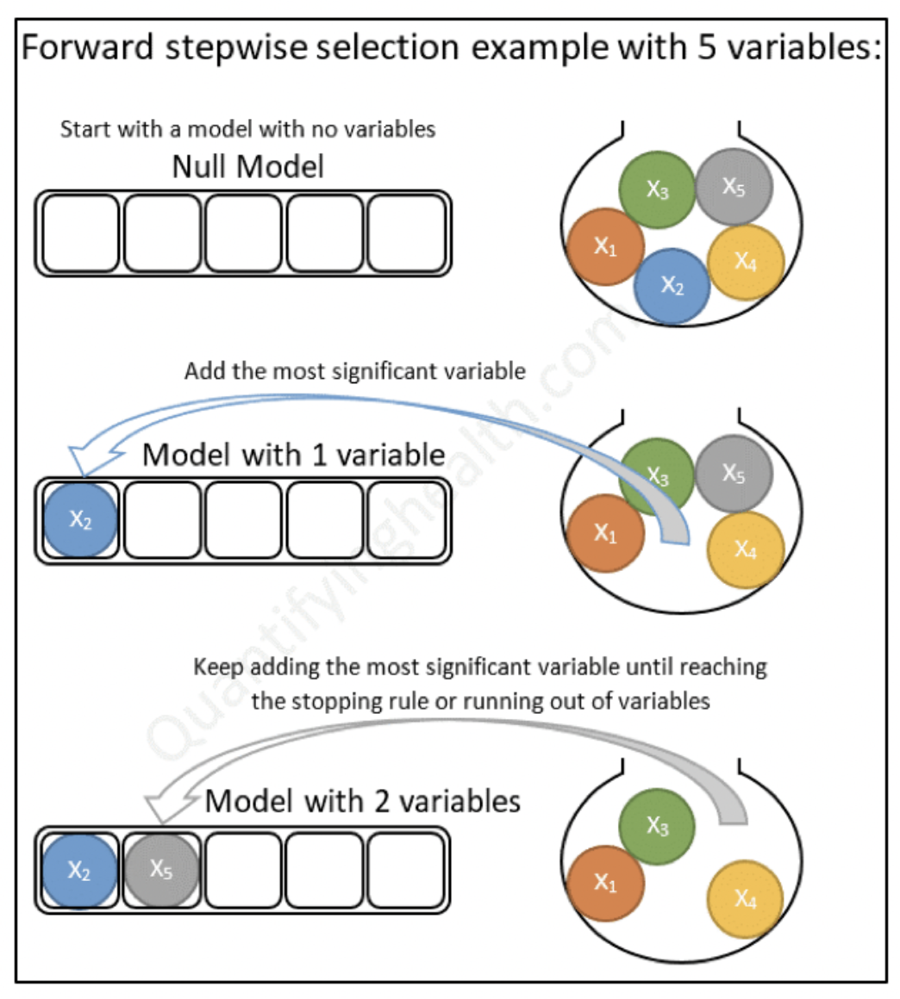
La función train() del paquete caret proporciona un flujo de trabajo sencillo
para realizar la selección de variables utilizando los paquetes leaps y MASS.
Tiene una opción denominada método, que puede tomar los siguientes valores:
- “LeapBackward” para ajustar la regresión lineal con la selección hacia atrás
- “leapForward” para ajustar la regresión lineal con la selección hacia adelante
- “leapSeq” para ajustar la regresión lineal con la selección por pasos
También es necesario especificar el parámetro de ajuste nvmax,
que corresponde al número máximo de predictores que se incorporarán al modelo.
Por ejemplo, nvmax puede variar de 1 a 5. En este caso, la función comienza
buscando diferentes mejores modelos de diferente tamaño, hasta el mejor modelo
de 5 variables. Es decir, busca el mejor modelo de 1 variable,
el mejor modelo de 2 variables, … , el mejor modelo de 5 variables.
Usaremos una validación cruzada de 10 veces para estimar el error de predicción promedio (RMSE) de cada uno de los 5 modelos.
La métrica estadística RMSE se utiliza para comparar los 5 modelos y elegir automáticamente el mejor, donde mejor se define como el modelo que minimiza el RMSE
library(caret)## Loading required package: latticeset.seed(123)
library(doParallel)## Loading required package: foreach##
## Attaching package: 'foreach'## The following objects are masked from 'package:purrr':
##
## accumulate, when## Loading required package: iterators## Loading required package: parallelUseCores <- detectCores() - 1
cluster <- makeCluster(UseCores)
registerDoParallel(cluster)
forward_model <- train(
Sale_Price ~ Year_Built + Bldg_Type,
data = ames, method = "leapForward", tuneGrid = data.frame(nvmax =1:5),
trContro = trainControl(method = "cv", number = 10))
forward_model$results## nvmax RMSE Rsquared MAE RMSESD RsquaredSD MAESD
## 1 1 65975.79 0.3137983 47033.10 2634.081 0.01897098 961.7005
## 2 2 64827.47 0.3375825 46080.90 2607.547 0.01925397 911.8713
## 3 3 64371.61 0.3468708 45875.79 2579.243 0.01892329 879.2333
## 4 4 63814.52 0.3583406 45385.38 2575.524 0.01841327 868.1283
## 5 5 63827.10 0.3580840 45399.20 2574.486 0.01835704 872.5526El resultado anterior muestra diferentes métricas y su desviación estándar para comparar la precisión de los 5 mejores modelos. Las columnas son:
nvmax: el número de variables en el modelo. Por ejemplonvmax = 2, especifica el mejor modelo de 2 variables.RMSE y MAE son dos métricas diferentes que miden el error de predicción de cada modelo. Cuanto menor sea el RMSE y MAE, mejor será el modelo.
Rsquared (\(R^2\)) indica la correlación entre los valores de resultado observados y los valores predichos por el modelo. Cuanto mayor sea la \(R^2\), mejor será el modelo.
En nuestro ejemplo, se puede ver que el modelo con 4 variables es el que tiene el
RMSE más bajo. Se puede obtener el mejor valor de ajuste (nvmax), seleccionados automáticamente por la función train(), de la siguiente manera:
forward_model$bestTune## nvmax
## 4 4La función summary() reporta el mejor conjunto de variables para cada tamaño
de modelo, hasta el mejor modelo de 4 variables.
summary(forward_model)## Subset selection object
## 5 Variables (and intercept)
## Forced in Forced out
## Year_Built FALSE FALSE
## Bldg_TypeTwoFmCon FALSE FALSE
## Bldg_TypeDuplex FALSE FALSE
## Bldg_TypeTwnhs FALSE FALSE
## Bldg_TypeTwnhsE FALSE FALSE
## 1 subsets of each size up to 4
## Selection Algorithm: forward
## Year_Built Bldg_TypeTwoFmCon Bldg_TypeDuplex Bldg_TypeTwnhs
## 1 ( 1 ) "*" " " " " " "
## 2 ( 1 ) "*" " " " " "*"
## 3 ( 1 ) "*" " " " " "*"
## 4 ( 1 ) "*" " " "*" "*"
## Bldg_TypeTwnhsE
## 1 ( 1 ) " "
## 2 ( 1 ) " "
## 3 ( 1 ) "*"
## 4 ( 1 ) "*"Un asterisco especifica que la variable se incluye en el modelo correspondiente.
6.4.1.1 Backward selection (selección hacia atrás)
Comienza con todos los predictores en el modelo (modelo completo), y elimina iterativamente los predictores menos contribuyentes y se detiene cuando tiene un modelo en el que todos los predictores son estadísticamente significativos.
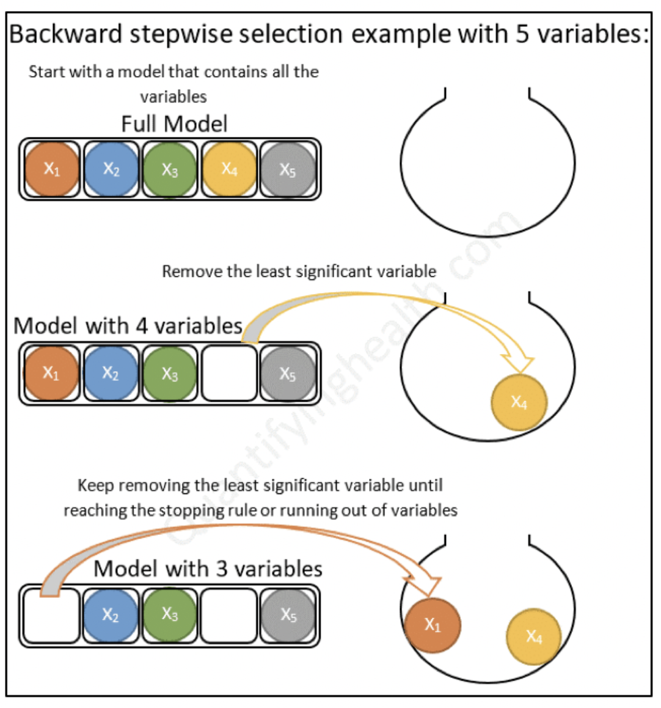
set.seed(123)
backward_model <- train(
Sale_Price ~ Year_Built + Bldg_Type,
data = ames, method = "leapBackward", tuneGrid = data.frame(nvmax =1:5),
trControl = trainControl(method = "cv", number = 10))
backward_model$results## nvmax RMSE Rsquared MAE RMSESD RsquaredSD MAESD
## 1 1 66061.59 0.3171505 46898.51 5663.063 0.04126243 2640.400
## 2 2 64957.33 0.3398822 45981.78 5640.144 0.04117377 2570.204
## 3 3 64422.01 0.3507725 45773.94 5516.025 0.03942256 2620.756
## 4 4 63967.84 0.3597521 45326.43 5365.403 0.03701859 2449.530
## 5 5 63974.95 0.3596118 45334.15 5365.339 0.03703523 2452.353summary(backward_model)## Subset selection object
## 5 Variables (and intercept)
## Forced in Forced out
## Year_Built FALSE FALSE
## Bldg_TypeTwoFmCon FALSE FALSE
## Bldg_TypeDuplex FALSE FALSE
## Bldg_TypeTwnhs FALSE FALSE
## Bldg_TypeTwnhsE FALSE FALSE
## 1 subsets of each size up to 4
## Selection Algorithm: backward
## Year_Built Bldg_TypeTwoFmCon Bldg_TypeDuplex Bldg_TypeTwnhs
## 1 ( 1 ) "*" " " " " " "
## 2 ( 1 ) "*" " " " " "*"
## 3 ( 1 ) "*" " " " " "*"
## 4 ( 1 ) "*" " " "*" "*"
## Bldg_TypeTwnhsE
## 1 ( 1 ) " "
## 2 ( 1 ) " "
## 3 ( 1 ) "*"
## 4 ( 1 ) "*"6.4.1.2 Stepwise selection (selección paso a paso)
Combinación de selecciones hacia adelante y hacia atrás. Comienza sin predictores, luego agrega secuencialmente los predictores más contribuyentes (como la selección hacia adelante). Después de agregar cada nueva variable, elimina cualquier variable que ya no proporcione una mejora en el ajuste del modelo (como la selección hacia atrás).
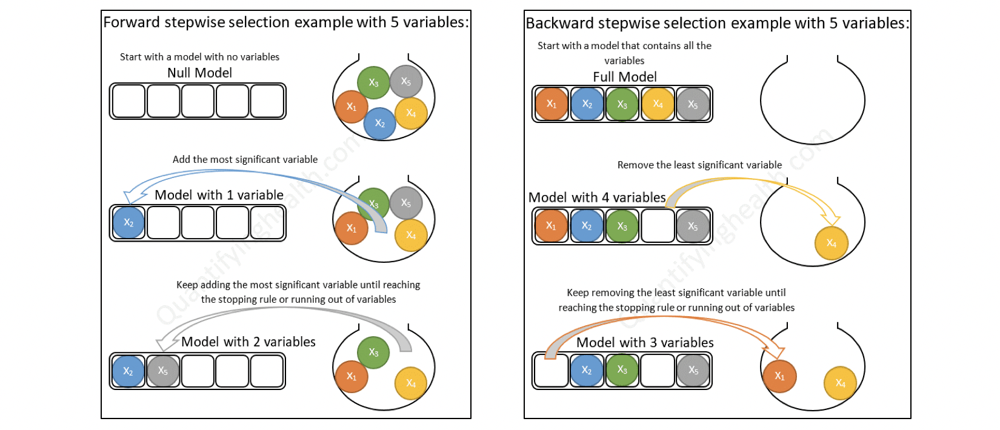
set.seed(123)
stepwise_model <- train(
Sale_Price ~ Year_Built + Bldg_Type,
data = ames, method = "leapSeq", tuneGrid = data.frame(nvmax =1:5),
trControl = trainControl(method = "cv", number = 10))
stopCluster(cluster)
stepwise_model$results## nvmax RMSE Rsquared MAE RMSESD RsquaredSD MAESD
## 1 1 66061.59 0.3171505 46898.51 5663.063 0.04126243 2640.400
## 2 2 64957.33 0.3398822 45981.78 5640.144 0.04117377 2570.204
## 3 3 64422.01 0.3507725 45773.94 5516.025 0.03942256 2620.756
## 4 4 63967.84 0.3597521 45326.43 5365.403 0.03701859 2449.530
## 5 5 63974.95 0.3596118 45334.15 5365.339 0.03703523 2452.353summary(stepwise_model)## Subset selection object
## 5 Variables (and intercept)
## Forced in Forced out
## Year_Built FALSE FALSE
## Bldg_TypeTwoFmCon FALSE FALSE
## Bldg_TypeDuplex FALSE FALSE
## Bldg_TypeTwnhs FALSE FALSE
## Bldg_TypeTwnhsE FALSE FALSE
## 1 subsets of each size up to 4
## Selection Algorithm: 'sequential replacement'
## Year_Built Bldg_TypeTwoFmCon Bldg_TypeDuplex Bldg_TypeTwnhs
## 1 ( 1 ) "*" " " " " " "
## 2 ( 1 ) "*" " " " " "*"
## 3 ( 1 ) "*" " " " " "*"
## 4 ( 1 ) "*" " " "*" "*"
## Bldg_TypeTwnhsE
## 1 ( 1 ) " "
## 2 ( 1 ) " "
## 3 ( 1 ) "*"
## 4 ( 1 ) "*"6.4.2 Desventajas de la selección forward, backward y stepwise
Inflación de resultados falsos positivos: la selección hacia adelante, hacia atrás y paso a paso utiliza muchas pruebas de hipótesis repetidas para tomar decisiones sobre la inclusión o exclusión de predictores individuales.
Los valores \(p\) correspondientes no están ajustados, lo que lleva a una selección excesiva de características (es decir, resultados falsos positivos). Además, este problema se agrava cuando están presentes predictores altamente correlacionados.
Sobreajuste del modelo: Las estadísticas del modelo resultante, incluidas las estimaciones de los parámetros y la incertidumbre asociada, son muy optimistas ya que no tienen en cuenta el proceso de selección.
6.5 Regresión logística
En esta sección aprenderemos sobre regresión logística, como se ajusta un modelo de regresión logística en R con tidymodels, las métricas de desempeño para problemas de clasificación y como podemos comparar modelos con estas métricas.
Al igual que en regresión lineal, existen dos tipos de modelos de regresión logística: regresión simple y regresión múltiple. La regresión logística simple es cuando se utiliza una variable independiente para estimar la probabilidad de pertenecer a un grupo de una variable cualitativa binaria. Cuando se utiliza más de una variable independiente, el proceso se denomina regresión logística múltiple.
6.5.1 Función sigmoide
Si una variable cualitativa con dos categorías se codifica como 1 y 0, matemáticamente es posible ajustar un modelo de regresión lineal por mínimos cuadrados. El problema de esta aproximación es que, al tratarse de una recta, para valores extremos del predictor, se obtienen valores de \(Y\) menores que 0 o mayores que 1, lo que entra en contradicción con el hecho de que las probabilidades siempre están dentro del rango [0,1].
Para evitar estos problemas, la regresión logística transforma el valor devuelto por la regresión lineal empleando una función cuyo resultado está siempre comprendido entre 0 y 1. Existen varias funciones que cumplen esta descripción, una de las más utilizadas es la función logística (también conocida como función sigmoide):
\[\sigma(x)=\frac{1}{1+e^{-x}}\] Función sigmoide:
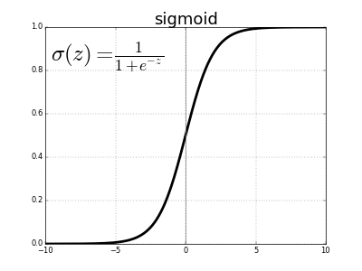 Para valores de \(x\) muy grandes, el valor de \(e^{-x}\) es aproximadamente 0 por lo que el valor de la función sigmoide es 1. Para valores de \(x\) muy negativos, el valor \(e^{-x}\) tiende a infinito por lo que el valor de la función sigmoide es 0.
Sustituyendo la \(x\) de la función sigmoide por la función lineal \(\beta_0+\beta_1X\) se obtiene que:
\[P(Y=k|X=x)=\frac{e^{\beta_0+\beta_1X}}{1+e^{\beta_0+\beta_1X}}\]
donde \(P(Y=k|X=x)\) puede interpretarse como: la probabilidad de que la variable cualitativa \(Y\) adquiera el valor \(k\), dado que el predictor \(X\) tiene el valor \(x\).
Esta función, puede ajustarse de forma sencilla con métodos de regresión lineal si se emplea su versión logarítmica:
\[ln(\frac{p(Y=k|X=x)}{1−p(Y=k|X=x)})=\beta_0+\beta_1X\]
6.5.2 Ajuste del modelo
La combinación óptima de coeficientes \(\beta_0\) y \(\beta_1\) será aquella que tenga la máxima verosimilitud (maximum likelihood), es decir el valor de los parámetros \(\beta_0\) y \(\beta_1\) con los que se maximiza la probabilidad de obtener los datos observados.
El método de maximum likelihood está ampliamente extendido en la estadística aunque su implementación no siempre es trivial.
Otra forma para ajustar un modelo de regresión logística es empleando descenso de gradiente. Si bien este no es el método de optimización más adecuado para resolver la regresión logística, está muy extendido en el ámbito de machine learning para ajustar otros modelos.
Regresión logística múltiple
La regresión logística múltiple es una extensión de la regresión logística simple. Se basa en los mismos principios que la regresión logística simple (explicados anteriormente) pero ampliando el número de predictores. Los predictores pueden ser tanto continuos como categóricos.
\[ln(\frac{p}{1-p})=\beta_0+\beta_1x_1+\beta_2x_2+...+\beta_ix_i\]
\[logit(Y)=\beta_0+\beta_1x_1+\beta_2x_2+...+\beta_ix_i\]
El valor de la probabilidad de Y se puede obtener con la inversa del logaritmo natural:
\[p(Y)=\frac{e^{\beta_0+\beta_1x_1+\beta_2x_2+...+\beta_ix_i}}{1+e^{\beta_0+\beta_1x_1+\beta_2x_2+...+\beta_ix_i}}\]
6.5.3 Convertir probabilidad en clasificación
Una de las principales aplicaciones de un modelo de regresión logística es clasificar la variable cualitativa en función de valor que tome el predictor. Para conseguir esta clasificación, es necesario establecer un threshold de probabilidad a partir de la cual se considera que la variable pertenece a uno de los niveles. Por ejemplo, se puede asignar una observación al grupo 1 si \(p̂ (Y=1|X)>0.3\) y al grupo 0 si ocurre lo contrario.
Es importante mencionar que el punto de corte no tiene que ser 0.5, este puede ser seleccionado a convenecía de la métrica a optimizar.
6.5.4 Métricas de desempeño
Existen distintas métricas de desempeño para problemas de clasificación, debido a que contamos con la respuesta correcta podemos contar cuántos aciertos tuvimos y cuántos fallos tuvimos.
Primero, por simplicidad ocuparemos un ejemplo de clasificación binaria, Fraude (1) o No fraude (0).
En este tipo de algoritmos definimos cuál de las categorías será nuestra etiqueta positiva y cuál será la negativa. La positiva será la categoría que queremos predecir -en nuestro ejemplo, fraude- y la negativa lo opuesto -en el caso binario- en nuestro ejemplo, no fraude.
Dadas estas definiciones tenemos 4 posibilidades:
True positives: Nuestra predicción dijo que la transacción es fraude y la etiqueta real dice que es fradue.
False positives: Nuestra predicción dijo que la transacción es fraude y la etiqueta real dice que no es fraude.
True negatives: Nuestra predicción dijo que la transacción es no fraude y la etiqueta real dice que no es fraude.
False negatives: Nuestra predicción dijo que la transacción es no fraude y la etiqueta real dice que es fraude.
Matriz de confusión

Esta métrica corresponde a una matriz en donde se plasma el conteo de los aciertos y los errores que haya hecho el modelo.
En esta métrica utilizamos todos los aciertos y todos los errores que haya tenido el modelo en las predicciones, esto es: los verdaderos positivos (TP), los verdaderos negativos (TN), los falsos positivos (FP) y los falsos negativos (FN).
Normalmente los renglones representan las etiquetas reales, ya sean positivas o negativas, y las columnas, las etiquetas predichas.
- Accuracy
Número de aciertos totales entre todas las predicciones.
\[accuracy = \frac{TP + TN}{ TP+FP+TN+FN}\]
La métrica más utilizada, en datasets imbalanceados esta métrica no nos sirve, al contrario, nos engaña.
- Precision: Eficiencia
De los que identificamos como clase positiva, cuántos identificamos correctamente. ¿Qué tan eficientes somos en la predicción?
\[precision = \frac{TP}{TP + FP}\]
¿Cuándo utilizar precision?
Esta es la métrica que ocuparás más, pues en un contexto de negocio, donde los recursos son finitos y tiene un costo asociado, ya sea monetario o de tiempo o de recursos, necesitarás que las predicciones de tu etiqueta positiva sean muy eficientes.
Al utilizar esta métrica estaremos optimizando el modelo para minimizar el número de falsos positivos.
- Recall o Sensibilidad: Cobertura
Del universo posible de nuestra clase positiva, cuántos identificamos correctamente.
\[recall = \frac{TP}{TP + FN }\]
Esta métrica la ocuparás cuando en el contexto de negocio de tu problema sea más conveniente minimizar los falsos negativos por el impacto que estos pueden tener en las personas en quienes se implementará la predicción.
Al utilizar esta métrica estaremos optimizando el modelo para minimizar el número de falsos negativos.
- Especificidad
Es el número de observaciones correctamente identificados como negativos fuera del total de negativos.
\[Specificity = \frac{TN}{TN+FP}\]
- F1-score
Combina precision y recall para optimizar ambos.
\[F = 2 *\frac{precision * recall}{precision + recall} \]
Se recomienda utilizar esta métrica de desempeño cuando quieres balancear tanto los falsos positivos como los falsos negativos. Aunque es una buena solución para tomar en cuenta ambos errores, pocas veces hay problemas reales que permiten ocuparla, esto es porque en más del 90% de los casos tenemos una restricción en recursos.
Ahora con esto en mente podemos definir las siguientes métricas:
- AUC y ROC: Area Under the Curve y Receiver operator characteristic

Una curva ROC es un gráfico que muestra el desempeño de un modelo de clasificación en todos los puntos de corte.
AUC significa “Área bajo la curva ROC.” Es decir, AUC mide el área debajo de la curva ROC.
6.5.5 Implementación en R
Ajustaremos un modelo de regresión logística usando la receta antes vista.
logistic_model <- logistic_reg() %>%
set_engine("glm")
logistic_fit1 <- fit(logistic_model, Churn ~ ., telco_juiced)
logistic_p_test <- predict(logistic_fit1, telco_test_bake) %>%
bind_cols(telco_test_bake)
logistic_p_test## # A tibble: 2,113 × 29
## .pred_class SeniorCitizen MonthlyCharges TotalCharges Churn gender_Male
## <fct> <dbl> <dbl> <dbl> <fct> <dbl>
## 1 No -0.442 -0.271 -0.175 No 1
## 2 Yes -0.442 1.15 -0.647 Yes 0
## 3 No -0.442 -1.18 -0.876 No 0
## 4 No -0.442 -1.53 -0.865 No 1
## 5 No -0.442 1.38 2.25 No 1
## 6 Yes -0.442 0.830 -0.187 No 0
## 7 No -0.442 -1.51 -0.920 No 1
## 8 No -0.442 -0.183 0.302 No 1
## 9 No -0.442 -1.16 -0.996 Yes 1
## 10 No -0.442 0.837 1.80 No 1
## # … with 2,103 more rows, and 23 more variables: Partner_Yes <dbl>,
## # Dependents_Yes <dbl>, tenure_X1.2.years <dbl>, tenure_X2.3.years <dbl>,
## # tenure_X3.4.years <dbl>, tenure_X4.5.years <dbl>, tenure_X5.6.years <dbl>,
## # PhoneService_Yes <dbl>, MultipleLines_Yes <dbl>,
## # InternetService_Fiber.optic <dbl>, InternetService_No <dbl>,
## # OnlineSecurity_Yes <dbl>, OnlineBackup_Yes <dbl>,
## # DeviceProtection_Yes <dbl>, TechSupport_Yes <dbl>, StreamingTV_Yes <dbl>, …6.5.6 Métricas de desempeño
Matriz de Confusión
yardstick::conf_mat(logistic_p_test,Churn,.pred_class)## Truth
## Prediction No Yes
## No 1418 287
## Yes 129 279Accuracy
(1398+296)/(1398+160+256+296)## [1] 0.8028436yardstick::accuracy(logistic_p_test,Churn,.pred_class, event_level = "second")## # A tibble: 1 × 3
## .metric .estimator .estimate
## <chr> <chr> <dbl>
## 1 accuracy binary 0.803Precision
yardstick::precision(logistic_p_test,Churn,.pred_class,event_level = "second")## # A tibble: 1 × 3
## .metric .estimator .estimate
## <chr> <chr> <dbl>
## 1 precision binary 0.684Recall
yardstick::recall(logistic_p_test,Churn,.pred_class,event_level = "second")## # A tibble: 1 × 3
## .metric .estimator .estimate
## <chr> <chr> <dbl>
## 1 recall binary 0.493F1 Score
with(logistic_p_test,MLmetrics::F1_Score(.pred_class,Churn),event_level = "second" )## [1] 0.8720787¿Y si se quiere un corte diferente? ¿el negocio qué necesita?
logistic_p_test_prob <- predict(logistic_fit1, telco_test_bake, type="prob") %>%
bind_cols(telco_test_bake)
logistic_p_test_prob## # A tibble: 2,113 × 30
## .pred_No .pred_Yes SeniorCitizen MonthlyCharges TotalCharges Churn
## <dbl> <dbl> <dbl> <dbl> <dbl> <fct>
## 1 0.963 0.0367 -0.442 -0.271 -0.175 No
## 2 0.163 0.837 -0.442 1.15 -0.647 Yes
## 3 0.665 0.335 -0.442 -1.18 -0.876 No
## 4 0.987 0.0130 -0.442 -1.53 -0.865 No
## 5 0.965 0.0348 -0.442 1.38 2.25 No
## 6 0.491 0.509 -0.442 0.830 -0.187 No
## 7 0.925 0.0753 -0.442 -1.51 -0.920 No
## 8 0.955 0.0449 -0.442 -0.183 0.302 No
## 9 0.576 0.424 -0.442 -1.16 -0.996 Yes
## 10 0.981 0.0187 -0.442 0.837 1.80 No
## # … with 2,103 more rows, and 24 more variables: gender_Male <dbl>,
## # Partner_Yes <dbl>, Dependents_Yes <dbl>, tenure_X1.2.years <dbl>,
## # tenure_X2.3.years <dbl>, tenure_X3.4.years <dbl>, tenure_X4.5.years <dbl>,
## # tenure_X5.6.years <dbl>, PhoneService_Yes <dbl>, MultipleLines_Yes <dbl>,
## # InternetService_Fiber.optic <dbl>, InternetService_No <dbl>,
## # OnlineSecurity_Yes <dbl>, OnlineBackup_Yes <dbl>,
## # DeviceProtection_Yes <dbl>, TechSupport_Yes <dbl>, StreamingTV_Yes <dbl>, …results_cla_logistico <- logistic_p_test_problogistic_p_test_prob <- logistic_p_test_prob %>%
mutate(.pred_class = as_factor(if_else ( .pred_Yes >= 0.30, 'Yes', 'No'))) %>%
relocate(.pred_class , .before = .pred_No)
logistic_p_test_prob## # A tibble: 2,113 × 31
## .pred_class .pred_No .pred_Yes SeniorCitizen MonthlyCharges TotalCharges
## <fct> <dbl> <dbl> <dbl> <dbl> <dbl>
## 1 No 0.963 0.0367 -0.442 -0.271 -0.175
## 2 Yes 0.163 0.837 -0.442 1.15 -0.647
## 3 Yes 0.665 0.335 -0.442 -1.18 -0.876
## 4 No 0.987 0.0130 -0.442 -1.53 -0.865
## 5 No 0.965 0.0348 -0.442 1.38 2.25
## 6 Yes 0.491 0.509 -0.442 0.830 -0.187
## 7 No 0.925 0.0753 -0.442 -1.51 -0.920
## 8 No 0.955 0.0449 -0.442 -0.183 0.302
## 9 Yes 0.576 0.424 -0.442 -1.16 -0.996
## 10 No 0.981 0.0187 -0.442 0.837 1.80
## # … with 2,103 more rows, and 25 more variables: Churn <fct>,
## # gender_Male <dbl>, Partner_Yes <dbl>, Dependents_Yes <dbl>,
## # tenure_X1.2.years <dbl>, tenure_X2.3.years <dbl>, tenure_X3.4.years <dbl>,
## # tenure_X4.5.years <dbl>, tenure_X5.6.years <dbl>, PhoneService_Yes <dbl>,
## # MultipleLines_Yes <dbl>, InternetService_Fiber.optic <dbl>,
## # InternetService_No <dbl>, OnlineSecurity_Yes <dbl>, OnlineBackup_Yes <dbl>,
## # DeviceProtection_Yes <dbl>, TechSupport_Yes <dbl>, StreamingTV_Yes <dbl>, …cm_5<- yardstick::conf_mat(logistic_p_test,Churn,.pred_class)
cm_3<- yardstick::conf_mat(logistic_p_test_prob,Churn,.pred_class)
cm_5## Truth
## Prediction No Yes
## No 1418 287
## Yes 129 279cm_3## Truth
## Prediction No Yes
## No 1182 123
## Yes 365 443Precision
yardstick::precision(logistic_p_test_prob,Churn,.pred_class,event_level = "second")## # A tibble: 1 × 3
## .metric .estimator .estimate
## <chr> <chr> <dbl>
## 1 precision binary 0.548Recall
yardstick::recall(logistic_p_test_prob,Churn,.pred_class, event_level = "second")## # A tibble: 1 × 3
## .metric .estimator .estimate
## <chr> <chr> <dbl>
## 1 recall binary 0.783Para poder determinar cual es el mejor punto de corte, es indispensable conocer el comportamiento y efecto de los diferentes puntos de corte.
Veamos un ejemplo visual en nuestra aplicación de Shiny: ConfusionMatrixShiny
6.6 Regresión regularizada: Ridge, Lasso & ElasticNet

En muchas técnicas de aprendizaje automático, el aprendizaje consiste en encontrar los coeficientes que minimizan una función de costo.
Un modelo estándar de mínimos cuadrados tiende a tener alguna variación, es decir, este modelo no se generalizará bien para un conjunto de datos diferente a sus datos de entrenamiento.
La regularización consiste en añadir una penalización a la función de costo. Esta penalización produce modelos más simples que generalizan mejor y evita el riesgo de sobreajuste.
El procedimiento de ajuste implica una función de pérdida, conocida como suma de cuadrados residual o RSS. Los coeficientes \(\beta\) se eligen de manera que minimicen esta función de pérdida.
\[RSS = \sum_{i=1}^n\left(y_i - \beta_0- \sum_{i=1}^p \beta_jx_{ij}\right)^2\]
Esto ajustará los coeficientes en función de sus datos de entrenamiento. Si hay ruido en los datos de entrenamiento, los coeficientes estimados no se generalizarán bien a los datos futuros. Aquí es donde entra la regularización y reduce o regulariza estas estimaciones aprendidas hacia cero.
En esta sección se verán las regularizaciones más usadas en machine learning:
- Ridge (conocida también como L2)
- Lasso (también conocida como L1)
- ElasticNet que combina tanto Lasso como Ridge.
Para cada una de estas regularizaciones ajustaremos un modelo de regresión lineal al conjunto de datos de viviendas de Ames con ayuda del paquete de tidymodels llamado parsnip.
6.6.1 Regularización Ridge
\[\sum_{i=1}^n\left(y_i - \beta_0- \sum_{i=1}^p \beta_jx_{ij}\right)^2 + \lambda \sum_{j=1}^p \beta_j^2 = RSS + \lambda \sum_{j=1}^p \beta_j^2\] En este tipo de regularización RSS se modifica agregando una cantidad de contracción y los coeficientes se estiman minimizando esta función. \(\lambda\) es el parámetro de ajuste que decide cuánto queremos penalizar la flexibilidad de el modelo.
El aumento de la flexibilidad de un modelo está representado por el aumento de sus coeficientes, si se desea minimizar la función anterior, los coeficientes deben ser pequeños.
Así es como la técnica de regresión de Ridge evita que los coeficientes aumenten demasiado. Además, reduce la asociación estimada de cada variable con la respuesta excepto la intersección \(\beta_0\). Esta intersección es una medida del valor medio de la respuesta cuando \(x_{i1} = x_{i2} =\dots= x_{ip} = 0\).
Cuando \(\lambda = 0\), el término de penalización no tiene efecto y las estimaciones serán iguales a mínimos cuadrados.
Sin embargo, a medida que \(\lambda \rightarrow \infty\), el impacto de la penalización por contracción aumenta, y las estimaciones se acercarán a cero.
La selección de un buen valor de \(\lambda\) es fundamental. Las estimaciones de coeficientes producidas por este método también se conocen como la norma L2.
Nota: Es necesario estandarizar los predictores o llevarlos a la misma escala antes de aplicar esta regularización. La fórmula utilizada para hacer esto se da a continuación.
\[\widetilde{x}_{ij} = \frac{x_{ij}}{\sqrt{\frac{1}{n}\sum_{i=1}^n(x_{ij} - \bar{x_j})^2}}\]
6.6.2 Regularización Lasso
\[\sum_{i=1}^n\left(y_i - \beta_0- \sum_{i=1}^p \beta_jx_{ij}\right)^2 + \lambda \sum_{j=1}^p |\beta_j| = RSS + \lambda \sum_{j=1}^p |\beta_j|\] Lasso es otra variación, en la que se minimiza la función anterior. Esta variación se diferencia de la regresión de Ridge solo en penalizar los coeficientes altos. Utiliza \(|\beta_j|\) (módulo) en lugar de los cuadrados de \(\beta\) como penalización.
Las estimaciones de coeficientes producidas por este método también se conocen como la norma L1.
La regresión Ridge se puede considerar como la solución de una ecuación, donde la suma de los cuadrados de los coeficientes es menor o igual que \(s\), donde \(s\) es una constante que existe para cada valor del factor de contracción \(\lambda\)
\[\beta_1^2 + \beta_2^2 \leq s\]
Esto implica que los coeficientes de la regresión Ridge tienen el RSS (función de pérdida) más pequeño para todos los puntos que se encuentran dentro del círculo dado por la función de restricción \(\beta_1^2 + \beta_2^2 \leq s\).
Y en la regresión Lasso se puede considerar como una ecuación en la que la suma del módulo de coeficientes es menor o igual que \(s\).
\[|\beta_1| + |\beta_2| \leq s\]
Esto implica que los coeficientes de lazo tienen la RSS (función de pérdida) más pequeña para todos los puntos que se encuentran dentro del diamante dado por la función de restricción \(|\beta_1| + |\beta_2| \leq s\)
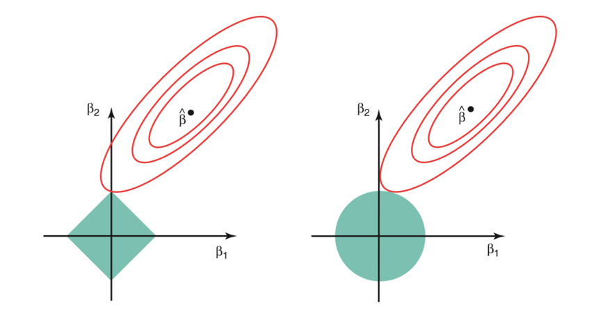
La imagen de arriba muestra las funciones de restricción (áreas verdes) para Lasso (izquierda) y Ridge (derecha), junto con contornos para RSS (elipse roja).
Para un valor muy grande de \(s\), las regiones verdes contendrán el centro de la elipse, lo que hará que las estimaciones de los coeficientes de ambas técnicas de regresión sean iguales a las estimaciones de mínimos cuadrados. Pero este no es el caso en la imagen de arriba.
En este caso, las estimaciones del coeficiente de regresión de Lasso y Ridge vienen dadas por el primer punto en el que una elipse contacta con la región de restricción. Dado que la regresión Ridge tiene una restricción circular sin puntos agudos, esta intersección generalmente no ocurrirá en un eje, por lo que las estimaciones del coeficiente de regresión de Ridge serán exclusivamente distintas de cero.
Sin embargo, la restricción de Lasso tiene esquinas en cada uno de los ejes, por lo que la elipse a menudo intersectará la región de restricción en un eje. Cuando esto ocurre, uno de los coeficientes será igual a cero. En dimensiones más altas, muchas de las estimaciones de coeficientes pueden ser iguales a cero simultáneamente.
Desventajas
Regresión Ridge: Reducirá los coeficientes de los predictores menos importantes, muy cerca de cero. Pero nunca los hará exactamente cero. En otras palabras, el modelo final incluirá todos los predictores.
Regresión Lasso: La penalización L1 tiene el efecto de forzar algunas de las estimaciones de coeficientes a ser exactamente iguales a cero cuando el parámetro de ajuste \(\lambda\) es suficientemente grande. Por lo tanto, este método realiza una selección de variables y se dice que produce modelos dispersos.
6.6.3 ElasticNet
ElasticNet surgió por primera vez como resultado de la crítica a Lasso, cuya selección de variables puede ser demasiado dependiente de los datos y, por lo tanto, inestable. La solución es combinar las penalizaciones de la regresión de Ridge y Lasso para obtener lo mejor de ambas regularizaciones.
ElasticNet tiene como objetivo minimizar la siguiente función de pérdida:
\[\frac{\sum_{i=1}^n\left(y_i - \beta_0- \sum_{i=1}^p \beta_jx_{ij}\right)^2}{2n} + \lambda\left( ({1-\alpha}) \sum_{j=1}^p|\beta_j| + \alpha \sum_{j=1}^p \beta_j ^2\right)\]
\[ = \frac{RSS}{2n}+ \lambda\left( ({1-\alpha}) \sum_{j=1}^p|\beta_j| + \alpha \sum_{j=1}^p \beta_j ^2\right)\] donde \(\alpha \in [0,1]\) es el parámetro de mezcla entre la regularización Ridge \((\alpha = 0)\) y la regularización Lasso \((\alpha = 1)\).
La combinación de ambas penalizaciones suele dar lugar a buenos resultados. Una estrategia frecuentemente utilizada es asignarle casi todo el peso a la penalización L1 ( \(\alpha \approx 1\)) para conseguir seleccionar predictores y menos peso a la regularización \(L2\) para dar cierta estabilidad en el caso de que algunos predictores estén correlacionados.
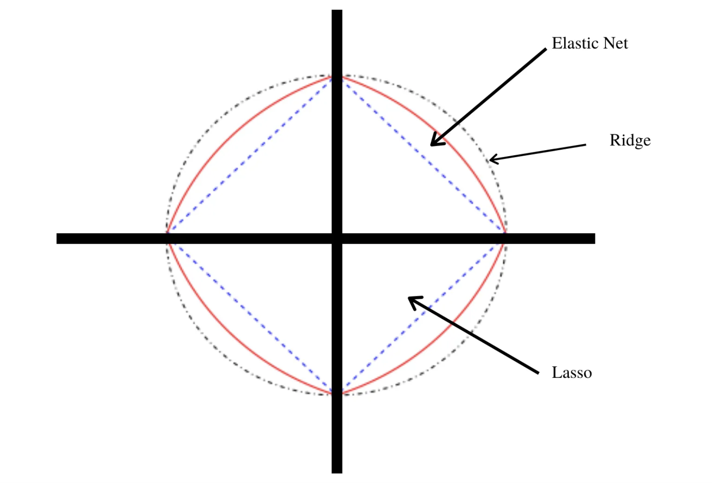
6.6.4 ElasticNet para regresión lineal
Utilizando el modelo linear_reg() del paquete parsnip. Hay varios mecanismos que
pueden realizar la regularización/penalización, los paquetes glmnet, sparklyr, keras o stan.
Usemos el primero aquí. El paquete glmnet solo implementa un método que no es de fórmula, pero parsnip permitirá que se use cualquiera de ellos.
Cuando se utiliza la regularización, los predictores deben de centrarse y escalarse
primero antes de pasar al modelo. El método de la fórmula no lo hará automáticamente,
por lo que tendremos que hacerlo nosotros mismos como se hizo en la sección
3.5 Preparación de conjunto de datos con la receta receta_casas.
El parámetro penalty es un número no negativo que representa la cantidad total
de regularización (solo glmnet, keras y spark).
Para los modelos de Keras, esto corresponde a la regularización L2.
Mientras que el parámetro mixture es un número entre cero y uno (inclusivo)
que es la proporción de regularización L1 en el modelo.
Cuando mixture = 1, es un modelo de Lasso puro, mientras que mixture = 0
indica que se está utilizando un modelo Ridge.
Primero declaramos la regresión logística con el mecanismo glm
set.seed(2453)
ames_folds<- vfold_cv(ames_train)
# Declaración del modelo
lasso_ridge_regression_model <- linear_reg(
mixture = tune(),
penalty = tune()) %>%
set_mode("regression") %>%
set_engine("glmnet")
# Declaración del flujo de trabajo
lasso_ridge_regression_workflow <- workflow() %>%
add_model(lasso_ridge_regression_model) %>%
add_recipe(receta_casas)
# Parámetros a probar
lasso_ridge_regression_parameters_set <- dials::parameters(
dials::penalty(range = c(-3, -1),
trans = log10_trans()),
dials::mixture(range = c(0,1))
)
# Grid
lasso_ridge_regression_parameters_grid <- grid_regular(
lasso_ridge_regression_parameters_set, levels = c(50, 10)
)
ctrl_grid <- control_grid(save_pred = T, verbose = T)UseCores <- detectCores() - 1
cluster <- makeCluster(UseCores)
registerDoParallel(cluster)
lasso_ridge_regression_tunning <- tune_grid(
lasso_ridge_regression_workflow,
resamples = ames_folds,
grid = lasso_ridge_regression_parameters_grid,
metrics = metric_set(rmse, rsq, mae),
control = ctrl_grid
)
stopCluster(cluster)
# Se guarda tune_grid en RDS
lasso_ridge_regression_tunning %>%
saveRDS("models/ml/lasso_ridge_regression_tunning.rds")lasso_ridge_regression_tunning <- readRDS("models/ml/lasso_ridge_regression_tunning.rds")# Métrica R cuadrada
lasso_ridge_regression_tunning %>%
unnest(.metrics) %>%
filter(.metric == "rsq") %>%
arrange(desc(.estimate)) %>%
head(10)## # A tibble: 10 × 10
## splits id penalty mixture .metric .estimator .estimate .config .notes
## <list> <chr> <dbl> <dbl> <chr> <chr> <dbl> <chr> <list>
## 1 <split … Fold04 0.0569 0 rsq standard 0.775 Preproc… <tibbl…
## 2 <split … Fold04 0.0625 0 rsq standard 0.775 Preproc… <tibbl…
## 3 <split … Fold04 0.0518 0 rsq standard 0.775 Preproc… <tibbl…
## 4 <split … Fold04 0.0687 0 rsq standard 0.775 Preproc… <tibbl…
## 5 <split … Fold04 0.0471 0 rsq standard 0.775 Preproc… <tibbl…
## 6 <split … Fold04 0.0754 0 rsq standard 0.775 Preproc… <tibbl…
## 7 <split … Fold04 0.0429 0 rsq standard 0.775 Preproc… <tibbl…
## 8 <split … Fold04 0.0829 0 rsq standard 0.775 Preproc… <tibbl…
## 9 <split … Fold04 0.0391 0 rsq standard 0.775 Preproc… <tibbl…
## 10 <split … Fold04 0.0356 0 rsq standard 0.775 Preproc… <tibbl…
## # … with 1 more variable: .predictions <list># Analizando las métricas de manera visual
graf_rsq <- lasso_ridge_regression_tunning %>% unnest(.metrics) %>%
filter(.metric == "rsq") %>%
ggplot(aes(x = penalty, y = .estimate)) +
scale_x_log10() +
geom_line(aes(color = id))+
theme_minimal()+
ggtitle('R cuadrada vs Penalización')
graf_rsq
graf_rmse <- lasso_ridge_regression_tunning %>% unnest(.metrics) %>%
filter(.metric == "rmse") %>%
ggplot(aes(x = penalty, y = .estimate)) +
scale_x_log10() +
geom_line(aes(color = id))+
theme_minimal()+
ggtitle('RMSE vs Penalización')
graf_rmse
graf_mae <- lasso_ridge_regression_tunning %>%
unnest(.metrics) %>%
filter(.metric == "mae") %>%
ggplot(aes(x = penalty, y = .estimate)) +
scale_x_log10() +
geom_line(aes(color = id))+
theme_minimal()+
ggtitle('MAE vs Penalización')
graf_mae
lasso_ridge_regression_tunning %>%
collect_metrics() %>%
filter(mixture == 0) %>%
ggplot(aes(penalty, mean, color = .metric)) +
geom_errorbar(aes(
ymin = mean - std_err,
ymax = mean + std_err
),
alpha = 0.5
) +
geom_line(size = 0.8) +
facet_wrap(~.metric, scales = "free", nrow = 2) +
scale_x_log10() +
theme(legend.position = "none")
# Selección de los mejores 10 modelos según la métrica R cuadrada
lasso_ridge_regression_tunning %>%
show_best(n = 10, metric = "rsq")## # A tibble: 10 × 8
## penalty mixture .metric .estimator mean n std_err .config
## <dbl> <dbl> <chr> <chr> <dbl> <int> <dbl> <chr>
## 1 0.0356 0 rsq standard 0.724 10 0.0179 Preprocessor1_Model039
## 2 0.0324 0 rsq standard 0.724 10 0.0179 Preprocessor1_Model038
## 3 0.0391 0 rsq standard 0.724 10 0.0179 Preprocessor1_Model040
## 4 0.0295 0 rsq standard 0.724 10 0.0180 Preprocessor1_Model037
## 5 0.001 0 rsq standard 0.724 10 0.0180 Preprocessor1_Model001
## 6 0.00110 0 rsq standard 0.724 10 0.0180 Preprocessor1_Model002
## 7 0.00121 0 rsq standard 0.724 10 0.0180 Preprocessor1_Model003
## 8 0.00133 0 rsq standard 0.724 10 0.0180 Preprocessor1_Model004
## 9 0.00146 0 rsq standard 0.724 10 0.0180 Preprocessor1_Model005
## 10 0.00160 0 rsq standard 0.724 10 0.0180 Preprocessor1_Model006# Selección del mejor modelo según la métrica R cuadrada
lasso_ridge_regression_best_model <- select_best(
lasso_ridge_regression_tunning, metric = "rsq")
# Selección del mejor modelo por un error estándar
lasso_ridge_regression_best_1se_model <- select_by_one_std_err(
lasso_ridge_regression_tunning, metric = "rsq", "rsq")
# Selección del mejor modelo por porcentaje de pérdida
lasso_ridge_regression_best_pct_loss_model <- select_by_pct_loss(
lasso_ridge_regression_tunning, metric = "rsq", "rsq")# Modelo final
lasso_ridge_regression_final_model <- lasso_ridge_regression_workflow %>%
finalize_workflow(lasso_ridge_regression_best_1se_model) %>%
parsnip::fit(data = ames_train)
lasso_ridge_regression_final_model %>%
tidy() %>% as.data.frame() %>%
arrange(desc(abs(estimate))) %>%
head(20)## term estimate penalty
## 1 (Intercept) 12.01919865 0.001
## 2 Year_Built 0.10302381 0.001
## 3 TotRms_AbvGrd 0.07581935 0.001
## 4 Fireplaces 0.07038602 0.001
## 5 Garage_Area 0.05397070 0.001
## 6 Full_Bath 0.05131544 0.001
## 7 Garage_Cars 0.04437585 0.001
## 8 BsmtFin_SF_1 -0.04355381 0.001
## 9 Mas_Vnr_Area 0.03407526 0.001
## 10 Bsmt_Unf_SF 0.03122835 0.001
## 11 Wood_Deck_SF 0.02581743 0.001
## 12 Lot_Area 0.02245877 0.001
## 13 Screen_Porch 0.02166848 0.001
## 14 Open_Porch_SF 0.02070449 0.001
## 15 Misc_Val -0.01964337 0.001
## 16 Enclosed_Porch 0.01926618 0.001
## 17 Longitude -0.01903978 0.001
## 18 Half_Bath 0.01895568 0.001
## 19 Latitude 0.01883234 0.001
## 20 Bedroom_AbvGr -0.01317616 0.001# Predicciones
results <- predict(lasso_ridge_regression_final_model, ames_test) %>%
dplyr::bind_cols(truth = ames_test$Log_SalePrice) %>%
dplyr::rename(pred_laso_ridge_reg = .pred, log_SalePrice = truth)
head(results)## # A tibble: 6 × 2
## pred_laso_ridge_reg log_SalePrice
## <dbl> <dbl>
## 1 11.8 11.6
## 2 11.5 12.1
## 3 12.1 12.1
## 4 12.2 12.1
## 5 11.7 11.9
## 6 12.4 12.3results_reg_regularizado <- resultsresults %>% yardstick::metrics(log_SalePrice,pred_laso_ridge_reg)## # A tibble: 3 × 3
## .metric .estimator .estimate
## <chr> <chr> <dbl>
## 1 rmse standard 0.199
## 2 rsq standard 0.764
## 3 mae standard 0.1496.6.5 ElasticNet para regresión logística
# Declaración del modelo de regresión logística
regularized_logistic_model <- logistic_reg(
mixture = tune(), penalty = tune()) %>%
set_mode('classification') %>%
set_engine("glmnet")
# Declaración del workflow
regularized_logistic_workflow <- workflow() %>%
add_recipe(telco_rec) %>%
add_model(regularized_logistic_model)
# Fijación de parámetros
regularized_parameters_set <- parameters(
penalty(
range = c(-10, 2),
trans = log10_trans()
),
dials::mixture()
)
# Declaración del grid
regularized_parameters_grid <- grid_regular(
regularized_parameters_set, levels = c(15, 15)
)
ctrl_grid <- control_grid(save_pred = T, verbose = T)
# V Fold Cross Validation
set.seed(1234)
telco_folds <- vfold_cv(telco_train)# Se crea el cluster de trabajo
UseCores <- detectCores() - 1
cluster <- makeCluster(UseCores)
registerDoParallel(cluster)
# Se corre tune grid
rlmt1 <- Sys.time()
regularized_tune_result <- tune_grid(
regularized_logistic_workflow,
resamples = telco_folds,
grid = regularized_parameters_grid,
metrics = metric_set(roc_auc, pr_auc),
control = ctrl_grid
)
rlmt2 <- Sys.time(); rlmt2 - rlmt1 # Tiempo que tardó el modelado
# Se detiene el cluster de trabajo
stopCluster(cluster)
# Se guarda tune_grid en formato RDS
regularized_tune_result %>%
saveRDS("models/ml/regularized_logistic_regression.rds")# Se carga el modelo
regularized_tune_result <- readRDS("models/ml/regularized_logistic_regression.rds")
# Métricas
regularized_tune_result %>% unnest(.metrics)## # A tibble: 4,500 × 10
## splits id penalty mixture .metric .estimator .estimate .config .notes
## <list> <chr> <dbl> <dbl> <chr> <chr> <dbl> <chr> <list>
## 1 <split … Fold… 1 e-10 0 roc_auc binary 0.777 Preproc… <tibbl…
## 2 <split … Fold… 7.20e-10 0 roc_auc binary 0.777 Preproc… <tibbl…
## 3 <split … Fold… 5.18e- 9 0 roc_auc binary 0.777 Preproc… <tibbl…
## 4 <split … Fold… 3.73e- 8 0 roc_auc binary 0.777 Preproc… <tibbl…
## 5 <split … Fold… 2.68e- 7 0 roc_auc binary 0.777 Preproc… <tibbl…
## 6 <split … Fold… 1.93e- 6 0 roc_auc binary 0.777 Preproc… <tibbl…
## 7 <split … Fold… 1.39e- 5 0 roc_auc binary 0.777 Preproc… <tibbl…
## 8 <split … Fold… 1 e- 4 0 roc_auc binary 0.777 Preproc… <tibbl…
## 9 <split … Fold… 7.20e- 4 0 roc_auc binary 0.777 Preproc… <tibbl…
## 10 <split … Fold… 5.18e- 3 0 roc_auc binary 0.777 Preproc… <tibbl…
## # … with 4,490 more rows, and 1 more variable: .predictions <list># Analizando las métricas de manera visual
graf_prec <- regularized_tune_result %>%
unnest(.metrics) %>%
filter(.metric == "pr_auc") %>%
ggplot(aes(x = penalty, y = .estimate)) +
scale_x_log10() +
geom_line(aes(color = id))+
theme_minimal()+
ggtitle('Precisión: Penalización vs. PR AUC')
graf_prec
graf_roc <- regularized_tune_result %>%
unnest(.metrics) %>%
filter(.metric == "roc_auc") %>%
ggplot(aes(x = penalty, y = .estimate)) +
scale_x_log10() +
geom_line(aes(color = id))+
theme_minimal()+
ggtitle('AUC: Penalización vs. ROC AUC')
graf_roc
regularized_tune_result %>%
collect_metrics() %>%
filter(mixture == 0.5) %>%
ggplot(aes(penalty, mean, color = .metric)) +
geom_errorbar(
aes(ymin = mean - std_err, ymax = mean + std_err),
alpha = 0.5
) +
geom_line(size = 0.8) +
facet_wrap(~.metric, scales = "free", nrow = 2) +
scale_x_log10() +
theme(legend.position = "none")
regularized_tune_result %>% collect_metrics() %>%
group_by(.metric) %>%
summarise(
max = max(mean),
min = min(mean),
mean = mean(mean),
median = median(mean),
.groups = "drop"
)## # A tibble: 2 × 5
## .metric max min mean median
## <chr> <dbl> <dbl> <dbl> <dbl>
## 1 pr_auc 0.912 0.868 0.901 0.901
## 2 roc_auc 0.801 0.5 0.730 0.730# Mejores 10 resultados para la métrica de precisión
show_best(regularized_tune_result, n = 10, metric = "pr_auc")## # A tibble: 10 × 8
## penalty mixture .metric .estimator mean n std_err .config
## <dbl> <dbl> <chr> <chr> <dbl> <int> <dbl> <chr>
## 1 0.0373 0.929 pr_auc binary 0.912 10 0.00492 Preprocessor1_Model206
## 2 0.0373 0.857 pr_auc binary 0.912 10 0.00494 Preprocessor1_Model191
## 3 0.0373 1 pr_auc binary 0.912 10 0.00493 Preprocessor1_Model221
## 4 0.0373 0.786 pr_auc binary 0.912 10 0.00496 Preprocessor1_Model176
## 5 0.0373 0.714 pr_auc binary 0.911 10 0.00497 Preprocessor1_Model161
## 6 0.0373 0.643 pr_auc binary 0.911 10 0.00497 Preprocessor1_Model146
## 7 0.00518 0.929 pr_auc binary 0.911 10 0.00495 Preprocessor1_Model205
## 8 0.00518 1 pr_auc binary 0.911 10 0.00494 Preprocessor1_Model220
## 9 0.00518 0.857 pr_auc binary 0.911 10 0.00495 Preprocessor1_Model190
## 10 0.00518 0.786 pr_auc binary 0.911 10 0.00495 Preprocessor1_Model175# Selección del mejor modelo según la métrica de precisión
best_regularized_logistic_model <- select_best(regularized_tune_result, metric = "pr_auc")
# Selección del mejor modelo por un error estándar
best_regularized_logistic_model_1se <- select_by_one_std_err(
regularized_tune_result, metric = "pr_auc", "pr_auc")
# Modelo final
final_regularized_logistic_model <- regularized_logistic_workflow %>%
finalize_workflow(best_regularized_logistic_model_1se) %>%
parsnip::fit(data = telco_train)## Warning: There are new levels in a factor: NAfinal_regularized_logistic_model %>% tidy() ## # A tibble: 5 × 3
## term estimate penalty
## <chr> <dbl> <dbl>
## 1 (Intercept) -1.18 1e-10
## 2 SeniorCitizen 0.233 1e-10
## 3 MonthlyCharges 1.13 1e-10
## 4 TotalCharges -1.20 1e-10
## 5 tenure_c..0.1.year....1.2.years....2.3.years....3.4.years… -0.350 1e-10results <- predict(final_regularized_logistic_model, telco_test, type = 'prob') %>%
dplyr::bind_cols(truth =telco_test$Churn) %>%
mutate(truth = factor(truth, levels = c('No', 'Yes'), labels = c('No', 'Yes')))## Warning: There are new levels in a factor: NAhead(results, 10)## # A tibble: 10 × 3
## .pred_No .pred_Yes truth
## <dbl> <dbl> <fct>
## 1 0.799 0.201 No
## 2 0.311 0.689 Yes
## 3 0.827 0.173 No
## 4 0.912 0.0884 No
## 5 0.918 0.0818 No
## 6 0.615 0.385 No
## 7 0.868 0.132 No
## 8 0.865 0.135 No
## 9 0.803 0.197 Yes
## 10 0.924 0.0758 Noresults_cla_regularizado <- resultspr_curve_data <- pr_curve(
results,
truth = truth,
estimate = .pred_Yes,
event_level = 'second'
)
roc_curve_data <- roc_curve(
results,
truth = truth,
estimate = .pred_Yes,
event_level = 'second'
)pr_curve_plot <- pr_curve_data %>%
ggplot(aes(x = recall, y = precision)) +
geom_path(size = 1, colour = 'lightblue') +
coord_equal() +
ggtitle("Precision vs Recall")+
theme_minimal()
pr_curve_plot
roc_curve_plot <- roc_curve_data %>%
ggplot(aes(x = 1 - specificity, y = sensitivity)) +
geom_path(size = 1, colour = 'lightblue') +
geom_abline() +
coord_equal() +
ggtitle("ROC Curve")+
theme_minimal()
roc_curve_plot
La curva Recall vs. Precision muestra la compensación entre precisión y recall para diferentes umbrales. Un área alta debajo de la curva representa tanto un alto recall como una alta precisión, donde la alta precisión se relaciona con una tasa baja de falsos positivos y recall alto se relaciona con una tasa baja de falsos negativos. Los puntajes altos para ambos muestran que el clasificador está arrojando resultados precisos (alta precisión), así como también arroja la mayoría de todos los resultados positivos (alto recall).
Por ejemplo, en caso de que queramos tener una sensibilidad al rededor de 0.75, inevitablemente se obtendrá una tasa de falsos positivos de 0.2.
roc_curve_plot
Una curva ROC es un gráfico que muestra el rendimiento de un modelo de clasificación en todos los umbrales de clasificación. Esta curva traza dos parámetros:
Tasa de verdaderos positivos:
\[TPR=\frac{TP}{TP + FN}\]
Tasa de falsos positivos:
\[FPR = \frac{FP}{FP + TN}\] Una curva ROC traza TPR frente a FPR en diferentes umbrales de clasificación. Si se reduce el umbral de clasificación, se clasifican más elementos como positivos, lo que aumenta tanto los falsos positivos como los verdaderos positivos.
Por ejemplo, si queremos tener una precisión de 0.80, la cobertura será apenas de 0.125 del total de positivos.
6.7 KNN: K-Nearest-Neighbor
KNN es un algoritmo de aprendizaje supervisado que podemos usar para regresión o clasificación.
La idea detrás del algoritmo es sencilla, este clasifica una nueva observación en la categoria que tenga mas elementos de las k observaciones más cercanas. Es decir, se calculará la distancia de esta nueva observación a cada observación existente, ordenaremos estas distancias de menor a mayor, tomamos las k primeras distancias, la nueva observación sera asignada al grupo que tenga mayor número de observaciones en estas k primeras distancias.
Clasificación
¿Cómo debería ser clasificada la nueva observación?


Ejemplo:
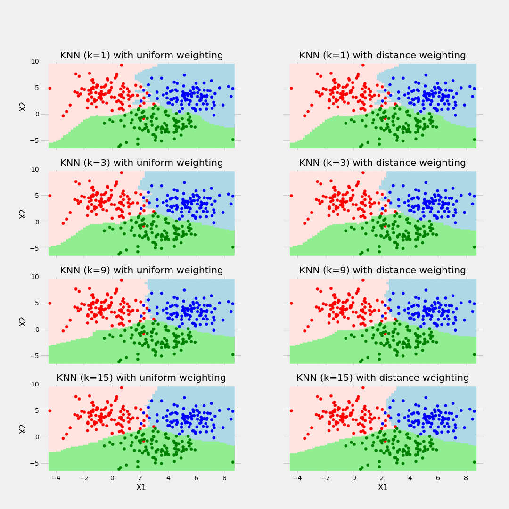
Regresión:
Considerando un modelo de 3 vecinos más cercanos, las siguientes imágenes muestran el proceso de ajuste y predicción de nuevas observaciones.
 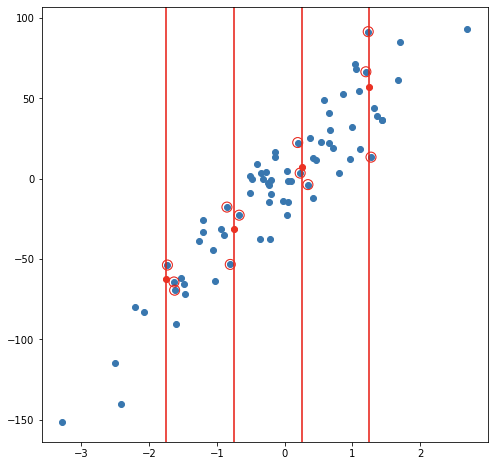
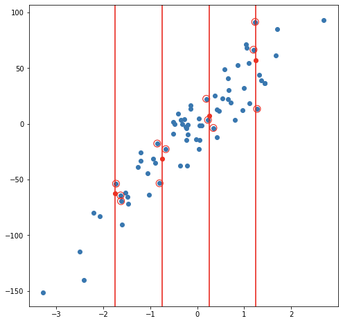
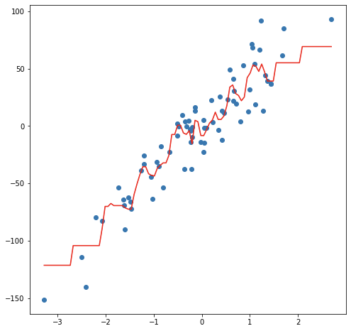
Ejemplo de balance de sesgo y varianza
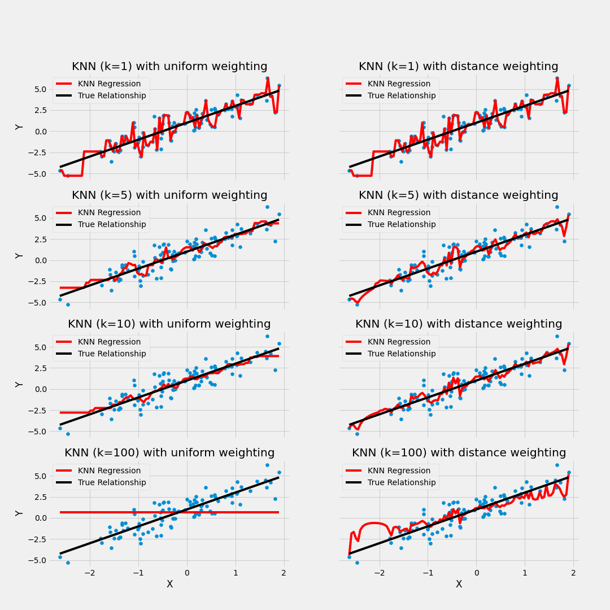
6.7.1 Ajuste del modelo
En contraste con otros algoritmos de aprendizaje supervisado, K-NN no genera un modelo del aprendizaje con datos de entrenamiento, sino que el aprendizaje sucede en el mismo momento en el que se prueban los datos de prueba. A este tipo de algoritmos se les llama lazy learning methods porque no aprende del conjunto de entrenamiento inmediatamente, sino que almacena el conjunto de datos y, en el momento de la clasificación, realiza una acción en el conjunto de datos.
El algoritmo KNN en la fase de entrenamiento simplemente almacena el conjunto de datos y cuando obtiene nuevos datos, clasifica esos datos en una categoría que es muy similar a los nuevos datos.
6.7.1.1 El algortimo KNN
Seleccionamos K como el número elegido de vecinos.
Para cada observación en el conjunto de entrenamiento calculamos la distancia con la nueva observación.
Ordenamos las distancias de menor a mayor.
Tomamos las primeras K entradas de la lista ordenada.
Tomamos la variable respuesta de las K entradas seleccionadas, (no importa si es regresión o clasificación).
Si estamos en un problema de regresión el output será la media de las K variables respuesta.
Si es un problema de clasificación regresaremos la moda de las K variables respuesta.
6.7.1.2 ¿Cómo seleccionar k?
Al configurar un modelo KNN, sólo hay algunos parámetros que deben elegirse/ajustarse para mejorar el rendimiento, uno de estos parámetros es el valor de la K.
No existe una forma particular de determinar el mejor valor para “K,” por lo que debemos probar algunos valores para encontrar “el mejor” de ellos.
Para los modelos de clasificación, especialmente si solo hay dos clases, generalmente se elige un número impar para k. Esto es para que el algoritmo nunca llegue a un “empate”
Una opción para seleccionar la K adecuada es ejecutar el algoritmo KNN varias veces con diferentes valores de K y elegimos la K que reduce la cantidad de errores mientras se mantiene la capacidad del algoritmo para hacer predicciones con precisión.
Observemos lo siguiente:

Estas gráficas se conoce como “gráfica de codo” y generalmente se usan para determinar el valor K.
A medida que disminuimos el valor de K a 1, nuestras predicciones se vuelven menos estables. Imaginemos que tomamos K = 1 y tenemos un punto de consulta rodeado por varios rojos y uno verde, pero el verde es el vecino más cercano. Razonablemente, pensaríamos que el punto de consulta es probablemente rojo, pero como K = 1, KNN predice incorrectamente que el punto de consulta es verde.
Inversamente, a medida que aumentamos el valor de K, nuestras predicciones se vuelven más estables debido a que tenemos más observaciones con quienes comparar, por lo tanto, es más probable que hagan predicciones más precisas. Eventualmente, comenzamos a presenciar un número creciente de errores, es en este punto que sabemos que hemos llevado el valor de K demasiado lejos.
6.7.1.3 Métodos de cálculo de la distancia entre observaciones
Otro parámetro que podemos ajustar para el modelo es la distancia usada, existen diferentes formas de medir qué tan “cerca” están dos puntos entre sí, y las diferencias entre estos métodos pueden volverse significativas en dimensiones superiores.
- La más utilizada es la distancia euclidiana, el tipo estándar de distancia.
\[d(X,Y) = \sqrt{\sum_{i=1}^{n} (x_i-y_i)^2}\]
- Otra métrica es la llamada distancia de Manhattan, que mide la distancia tomada en cada dirección cardinal, en lugar de a lo largo de la diagonal.
\[d(X,Y) = \sum_{i=1}^{n} |x_i - y_i|\]
- De manera más general, las anteriores son casos particulares de la distancia de Minkowski, cuya fórmula es:
\[d(X,Y) = (\sum_{i=1}^{n} |x_i-y_i|^p)^{\frac{1}{p}}\]
- Para variables categóricas podemos usar la distancia de Hamming, donde si X es igual a Y entonces la distancia es 0, si son distintos la distancia es 1.
6.7.2 Implementación en R
Usaremos las recetas antes implementadas para ajustar tanto el modelo de regresión como el de clasificación. Exploraremos un conjunto de hiperparámetros para elegir el mejor modelo.
6.7.2.1 Regresión:
knn_model <- nearest_neighbor(
mode = "regression",
neighbors = tune("K"),
weight_func = tune()) %>%
set_engine("kknn")
knn_workflow <- workflow() %>%
add_recipe(receta_casas) %>%
add_model(knn_model)
knn_parameters_set <- parameters(knn_workflow) %>%
update(K = dials::neighbors(c(10,80)),
weight_func = weight_func(values = c("rectangular", "inv", "gaussian", "cos")))
set.seed(123)
knn_grid <- knn_parameters_set %>%
grid_max_entropy(size = 150)
ctrl_grid <- control_grid(save_pred = T, verbose = T)library(doParallel)
UseCores <- detectCores() - 1
cluster <- makeCluster(UseCores)
registerDoParallel(cluster)
casas_folds <- vfold_cv(ames_train)
knnt1 <- Sys.time()
knn_tune_result <- tune_grid(
knn_workflow,
resamples = casas_folds,
grid = knn_grid,
metrics = metric_set(rmse, mae, mape),
control = ctrl_grid
)
knnt2 <- Sys.time(); knnt2 - knnt1
stopCluster(cluster)
knn_tune_result %>% saveRDS("models/ml/knn_model_reg.rds")Podemos obtener las métricas de cada fold con el siguiente código:
knn_tune_result <- readRDS("models/ml/knn_model_reg.rds")
knn_tune_result %>% unnest(.metrics)## # A tibble: 3,660 × 10
## splits id K weight_func .metric .estimator .estimate .config .notes
## <list> <chr> <int> <chr> <chr> <chr> <dbl> <chr> <list>
## 1 <split… Fold01 11 cos rmse standard 0.246 Preproc… <tibb…
## 2 <split… Fold01 12 cos rmse standard 0.245 Preproc… <tibb…
## 3 <split… Fold01 22 cos rmse standard 0.247 Preproc… <tibb…
## 4 <split… Fold01 27 cos rmse standard 0.248 Preproc… <tibb…
## 5 <split… Fold01 28 cos rmse standard 0.248 Preproc… <tibb…
## 6 <split… Fold01 30 cos rmse standard 0.248 Preproc… <tibb…
## 7 <split… Fold01 33 cos rmse standard 0.249 Preproc… <tibb…
## 8 <split… Fold01 35 cos rmse standard 0.249 Preproc… <tibb…
## 9 <split… Fold01 37 cos rmse standard 0.249 Preproc… <tibb…
## 10 <split… Fold01 39 cos rmse standard 0.249 Preproc… <tibb…
## # … with 3,650 more rows, and 1 more variable: .predictions <list>En la siguiente gráfica observamos el error cuadrático medio de las distintas métricas con distintos números de vecinos.
En los argumentos de la funcion, se puede seleccionar el kernel, esto es las opciones posibles para ponderar el promedio respecto a la distancia seleccinada. “Rectangular” (que es knn estándar no ponderado), “triangular,” “cos,” “inv,” “gaussiano,” “rango” y “óptimo.”
Para conocer más a cerca de las distintas métricas de distancia pueden consultar: Measures y KNN function
knn_tune_result %>%
autoplot(metric = "rmse")
En la siguiente gráfica observamos el error absoluto promedio de las distintas métricas con distintos números de vecinos.
knn_tune_result %>%
autoplot(metric = "mae")
Con el siguiente código obtenemos los mejores 10 modelos respecto al rmse.
show_best(knn_tune_result, n = 10, metric = "rmse")## # A tibble: 10 × 8
## K weight_func .metric .estimator mean n std_err .config
## <int> <chr> <chr> <chr> <dbl> <int> <dbl> <chr>
## 1 12 cos rmse standard 0.203 10 0.00892 Preprocessor1_Model…
## 2 22 cos rmse standard 0.203 10 0.00887 Preprocessor1_Model…
## 3 11 cos rmse standard 0.203 10 0.00885 Preprocessor1_Model…
## 4 27 cos rmse standard 0.204 10 0.00887 Preprocessor1_Model…
## 5 28 cos rmse standard 0.204 10 0.00890 Preprocessor1_Model…
## 6 30 cos rmse standard 0.204 10 0.00888 Preprocessor1_Model…
## 7 13 gaussian rmse standard 0.204 10 0.00873 Preprocessor1_Model…
## 8 15 gaussian rmse standard 0.205 10 0.00868 Preprocessor1_Model…
## 9 11 gaussian rmse standard 0.205 10 0.00855 Preprocessor1_Model…
## 10 33 cos rmse standard 0.205 10 0.00890 Preprocessor1_Model…Ahora obtendremos el modelo que mejor desempeño tiene tomando en cuenta el rmse y haremos las predicciones del conjunto de prueba con este modelo.
best_knn_model_reg <- select_best(knn_tune_result, metric = "rmse")
final_knn_model_reg <- knn_workflow %>%
finalize_workflow(best_knn_model_reg) %>%
parsnip::fit(data = ames_train)
results_reg <- predict(final_knn_model_reg, ames_test) %>%
dplyr::bind_cols(truth = ames_test$Log_SalePrice)6.7.2.1.1 Métricas de desempeño
Ahora para calcular las métricas de desempeño usaremos la paqueteria MLmetrics
library(MLmetrics)MAE
with(results_reg,MLmetrics::MAE(.pred, truth))## [1] 0.1432944MAPE
with(results_reg,MLmetrics::MAPE(.pred, truth))## [1] 0.01194444RMSE
with(results_reg,MLmetrics::RMSE(.pred, truth))## [1] 0.2040083\(R^2\)
with(results_reg,MLmetrics::R2_Score(.pred, truth))## [1] 0.7503294RMSLE
with(results_reg,MLmetrics::RMSLE(.pred, truth))## [1] 0.015783836.7.2.2 Clasificación:
Repetiremos el proceso para el problema de clasificación.
knn_model <- nearest_neighbor(
mode = "classification",
neighbors = tune("K"),
weight_func = tune()) %>%
set_engine("kknn")
knn_workflow <- workflow() %>%
add_recipe(telco_rec) %>%
add_model(knn_model)
knn_parameters_set <- parameters(knn_workflow) %>%
update(K = dials::neighbors(c(10,80)),
weight_func = weight_func(values = c("rectangular", "inv", "gaussian", "cos")))
set.seed(123)
knn_grid <- knn_parameters_set %>%
grid_max_entropy(size = 150)
ctrl_grid <- control_grid(save_pred = T, verbose = T)library(doParallel)
UseCores <- detectCores() - 1
cluster <- makeCluster(UseCores)
registerDoParallel(cluster)
telco_folds <- vfold_cv(telco_train)
knnt1 <- Sys.time()
knn_tune_result <- tune_grid(
knn_workflow,
resamples = telco_folds,
grid = knn_grid,
metrics = metric_set(roc_auc, pr_auc, sens),
control = ctrl_grid
)
knnt2 <- Sys.time(); knnt2 - knnt1
stopCluster(cluster)
knn_tune_result %>% saveRDS("models/ml/knn_model_cla.rds")knn_tune_result <- readRDS("models/ml/knn_model_cla.rds")autoplot(knn_tune_result, metric = "pr_auc")
autoplot(knn_tune_result, metric = "roc_auc")
show_best(knn_tune_result, n = 10, metric = "pr_auc")## # A tibble: 10 × 8
## K weight_func .metric .estimator mean n std_err .config
## <int> <chr> <chr> <chr> <dbl> <int> <dbl> <chr>
## 1 79 gaussian pr_auc binary 0.925 10 0.00268 Preprocessor1_Model…
## 2 78 gaussian pr_auc binary 0.925 10 0.00270 Preprocessor1_Model…
## 3 71 gaussian pr_auc binary 0.924 10 0.00276 Preprocessor1_Model…
## 4 74 gaussian pr_auc binary 0.924 10 0.00275 Preprocessor1_Model…
## 5 79 cos pr_auc binary 0.924 10 0.00272 Preprocessor1_Model…
## 6 77 cos pr_auc binary 0.924 10 0.00274 Preprocessor1_Model…
## 7 73 gaussian pr_auc binary 0.924 10 0.00276 Preprocessor1_Model…
## 8 67 gaussian pr_auc binary 0.924 10 0.00280 Preprocessor1_Model…
## 9 66 gaussian pr_auc binary 0.924 10 0.00281 Preprocessor1_Model…
## 10 68 cos pr_auc binary 0.924 10 0.00278 Preprocessor1_Model…best_knn_model_cla <- select_best(knn_tune_result, metric = "pr_auc")
final_knn_model_cla <- knn_workflow %>%
finalize_workflow(best_knn_model_cla) %>%
parsnip::fit(data = telco_train)## Warning: There are new levels in a factor: NAresults_cla <- predict(final_knn_model_cla, telco_test, type = 'prob') %>%
dplyr::bind_cols(truth =telco_test$Churn) %>%
mutate(truth = factor(truth, levels = c('No', 'Yes'), labels = c('No', 'Yes')))## Warning: There are new levels in a factor: NAhead(results_cla, 10)## # A tibble: 10 × 3
## .pred_No .pred_Yes truth
## <dbl> <dbl> <fct>
## 1 0.887 0.113 No
## 2 0.290 0.710 Yes
## 3 0.704 0.296 No
## 4 0.931 0.0688 No
## 5 0.857 0.143 No
## 6 0.548 0.452 No
## 7 0.945 0.0546 No
## 8 0.846 0.154 No
## 9 0.660 0.340 Yes
## 10 0.982 0.0182 Noresults_cla_knn <- results_clapr_curve_data <- pr_curve(
results_cla,
truth = truth,
estimate = .pred_Yes,
event_level = 'second'
)
roc_curve_data <- roc_curve(
results_cla,
truth = truth,
estimate = .pred_Yes,
event_level = 'second'
)pr_curve_plot <- pr_curve_data %>%
ggplot(aes(x = recall, y = precision)) +
geom_path(size = 1, colour = 'lightblue') +
coord_equal() +
ggtitle("Precision vs Recall")+
theme_minimal()
pr_curve_plot
roc_curve_plot <- roc_curve_data %>%
ggplot(aes(x = 1 - specificity, y = sensitivity)) +
geom_path(size = 1, colour = 'lightblue') +
geom_abline() +
coord_equal() +
ggtitle("ROC Curve")+
theme_minimal()
roc_curve_plot
6.8 Árboles de decisión (Decision trees)
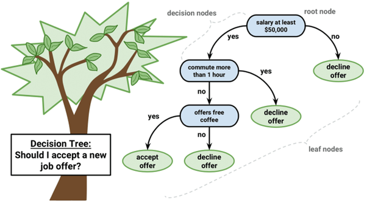
Un árbol de decisiones es un algoritmo del aprendizaje supervisado que se puede utilizar tanto para problemas de clasificación como de regresión. Es un clasificador estructurado en árbol, donde los nodos internos representan las características de un conjunto de datos, las ramas representan las reglas de decisión y cada nodo hoja representa el resultado. La idea básica de los árboles es buscar puntos de cortes en las variables de entrada para hacer predicciones, ir dividiendo la muestra, y encontrar cortes sucesivos para refinar las predicciones.
En un árbol de decisión, hay dos tipos nodos, el nodo de decisión o nodos internos (Decision Node) y el nodo hoja o nodo terminal (Leaf node). Los nodos de decisión se utilizan para tomar cualquier decisión y tienen múltiples ramas, mientras que los nodos hoja son el resultado de esas decisiones y no contienen más ramas.

- Clasificación:


- Regresión:
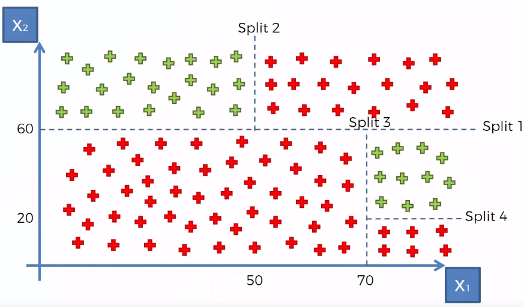

6.8.1 Ajuste del modelo
En un árbol de decisión, para predecir la clase del conjunto de datos, el algoritmo comienza desde el nodo raíz del árbol. Este algoritmo compara los valores de la variable raíz con la variable de registro y, según la comparación, sigue una rama y salta al siguiente nodo.
Para el siguiente nodo, el algoritmo vuelve a comparar el valor de la siguiente variable con los otros subnodos y avanza. Continúa el proceso hasta que se llega a un nodo hoja. El proceso completo se puede comprender mejor con los siguientes pasos:
Comenzamos el árbol con el nodo raíz, llamémoslo S, que contiene el conjunto de entrenamiento completo.
Encuentre la mejor variable en el conjunto de datos usando Attribute Selective Measure (ASM).
Divida la S en subconjuntos que contengan valores posibles para la mejor variable.
Genere el nodo del árbol de decisión, que contiene la mejor variable.
Cree de forma recursiva nuevos árboles de decisión utilizando los subconjuntos del conjunto de datos creado en el paso 3. Continúe este proceso hasta que se alcance una etapa en la que no pueda particionar más los nodos y este nodo final sera un nodo hoja.
Para clasificación nos quedaremos la moda de la variable respuesta del nodo hoja y para regresión usaremos la media de la variable respuesta.
6.8.1.1 ¿Qué es Attribute Selective Measure (ASM)?
Al implementar un árbol de decisión, surge el problema principal de cómo seleccionar la mejor variable para el nodo raíz y para los subnodos. Para resolver este problemas existe una técnica que se llama medida de selección de atributos o ASM. Mediante esta medición, podemos seleccionar fácilmente la mejor variable para los nodos del árbol. Hay dos técnicas populares para ASM, que son:
- Índice de Gini
La medida del grado de probabilidad de que una variable en particular se clasifique incorrectamente cuando se elige al azar se llama índice de Gini o impureza de Gini. Los datos se distribuyen por igual según el índice de Gini.
\[Gini = \sum_{i=1}^{n}\hat{p_i}(1-\hat{p}_i)\]
Con \(p_i\) como la probabilidad de que un objeto se clasifique en una clase particular.
Esta métrica puede analizarse como una métrica de impureza. Cuando todos o la mayoría de elementos dentro de un nodo pertenecen a una misma clase, el índice de Gini toma valores cercanos a cero.
Cuando se utiliza el índice de Gini como criterio seleccionar la variable para el nodo raíz, seleccionaremos la variable con el índice de Gini menor.
6.8.1.2 ¿Cuándo dejar de dividir un nodo?
Podríamos preguntarnos cuándo dejar de crecer un árbol. Pueden existir problemas que tengan un gran conjunto de variables y esto da como resultado una gran cantidad de divisiones, lo que a su vez genera un árbol de decisión muy grande Estos árboles son complejos y pueden provocar un sobreajuste. Entonces, necesitamos saber cuándo parar, una forma de hacer esto es establecer un número mínimo de entradas de entrenamiento para dividir un nodo. Otra forma es establecer la profundidad máxima de su modelo. La profundidad máxima se refiere a la longitud del camino más largo desde el nodo raíz hasta un nodo hoja.
6.8.1.3 ¿Cuándo podar un árbol?
El rendimiento de un árbol se puede aumentar aún más mediante la poda del árbol. Esto se refiere a eliminar las ramas que hacen uso de variables de poca importancia. De esta manera, reducimos la complejidad del árbol y, por lo tanto, aumentamos su poder predictivo al reducir el sobreajuste.
La poda puede comenzar en la raíz o en las hojas. El método más simple de poda comienza en las hojas y elimina cada nodo con la clase más popular en esa hoja, este cambio se mantiene si no deteriora la precisión. Se pueden usar métodos de poda más sofisticados, como la poda de complejidad de costos, donde se usa un parámetro de aprendizaje (alfa) para observar si los nodos se pueden eliminar en función del tamaño del subárbol.
6.8.2 Implementación en R
Usaremos las recetas antes implementadas para ajustar tanto el modelo de regresión como el de clasificación. Exploraremos un conjunto de hiperparámetros para elegir el mejor modelo. En esta ocasión usamos la función grid_regular() donde con el parámetro levels le indicamos cuantos distintos números queremos para cada parámetro a ajustar.
6.8.2.1 Regresión:
tree_model <- decision_tree(
mode = "regression",
tree_depth = tune(),
cost_complexity = tune(),
min_n = tune()) %>%
set_engine("rpart")
tree_workflow <- workflow() %>%
add_recipe(receta_casas) %>%
add_model(tree_model)
tree_grid <- grid_regular(min_n(),
tree_depth(),
cost_complexity(),
levels = 5)
ctrl_grid <- control_grid(save_pred = T, verbose = T)UseCores <- detectCores() - 1
cluster <- makeCluster(UseCores)
registerDoParallel(cluster)
casas_folds <- vfold_cv(ames_train)
knnt1 <- Sys.time()
tree_tune_result <- tune_grid(
tree_workflow,
resamples = casas_folds,
grid = tree_grid,
metrics = metric_set(rmse, mae, mape),
control = ctrl_grid
)
knnt2 <- Sys.time(); knnt2 - knnt1
stopCluster(cluster)
tree_tune_result %>% saveRDS("models/ml/tree_model_reg.rds")Podemos obtener las métricas de cada fold con el siguiente código:
tree_tune_result <- readRDS("models/ml/tree_model_reg.rds")
tree_tune_result %>% unnest(.metrics)## # A tibble: 3,750 × 11
## splits id cost_complexity tree_depth min_n .metric .estimator .estimate
## <list> <chr> <dbl> <int> <int> <chr> <chr> <dbl>
## 1 <split [… Fold… 0.0000000001 1 2 rmse standard 0.326
## 2 <split [… Fold… 0.0000000001 1 2 mae standard 0.235
## 3 <split [… Fold… 0.0000000001 1 2 mape standard 1.97
## 4 <split [… Fold… 0.0000000001 1 11 rmse standard 0.326
## 5 <split [… Fold… 0.0000000001 1 11 mae standard 0.235
## 6 <split [… Fold… 0.0000000001 1 11 mape standard 1.97
## 7 <split [… Fold… 0.0000000001 1 21 rmse standard 0.326
## 8 <split [… Fold… 0.0000000001 1 21 mae standard 0.235
## 9 <split [… Fold… 0.0000000001 1 21 mape standard 1.97
## 10 <split [… Fold… 0.0000000001 1 30 rmse standard 0.326
## # … with 3,740 more rows, and 3 more variables: .config <chr>, .notes <list>,
## # .predictions <list>En la siguiente gráfica observamos el error cuadrático medio de las distintas métricas con distintos números de vecinos.
tree_tune_result %>%
autoplot(metric = "rmse")
En la siguiente gráfica observamos el error absoluto promedio de las distintas métricas con distintos números de vecinos.
tree_tune_result %>%
autoplot(metric = "mae")
Con el siguiente código obtenemos los mejores 10 modelos respecto al rmse.
show_best(tree_tune_result, n = 10, metric = "rmse")## # A tibble: 10 × 9
## cost_complexity tree_depth min_n .metric .estimator mean n std_err
## <dbl> <int> <int> <chr> <chr> <dbl> <int> <dbl>
## 1 0.0000000001 11 40 rmse standard 0.217 10 0.00828
## 2 0.0000000178 11 40 rmse standard 0.217 10 0.00828
## 3 0.00000316 11 40 rmse standard 0.217 10 0.00828
## 4 0.0000000001 15 40 rmse standard 0.217 10 0.00831
## 5 0.0000000178 15 40 rmse standard 0.217 10 0.00831
## 6 0.00000316 15 40 rmse standard 0.217 10 0.00831
## 7 0.0000000001 8 40 rmse standard 0.217 10 0.00818
## 8 0.0000000178 8 40 rmse standard 0.217 10 0.00818
## 9 0.00000316 8 40 rmse standard 0.217 10 0.00818
## 10 0.0000000001 8 30 rmse standard 0.217 10 0.00799
## # … with 1 more variable: .config <chr>Ahora obtendremos el modelo que mejor desempeño tiene tomando en cuenta el rmse y haremos las predicciones del conjunto de prueba con este modelo.
best_tree_model_reg <- select_best(tree_tune_result, metric = "rmse")
final_tree_model_reg <- tree_workflow %>%
finalize_workflow(best_tree_model_reg) %>%
parsnip::fit(data = ames_train)
results_reg <- predict(final_tree_model_reg, ames_test) %>%
dplyr::bind_cols(truth = ames_test$Log_SalePrice)Nuestro árbol final se ve de la siguiente manera:
library(rpart.plot)
final_tree_model_reg %>%
extract_fit_engine() %>%
rpart.plot(roundint = FALSE)
Podemos obtener la impotancia de las variables:
library(vip)
final_tree_model_reg %>%
extract_fit_parsnip() %>%
vip() + ggtitle("Importancia de las variables")
6.8.2.1.1 Métricas de desempeño
Ahora para calcular las métricas de desempeño usaremos la paqueteria MLmetrics
library(MLmetrics)MAE
with(results_reg,MLmetrics::MAE(.pred,truth))## [1] 0.1545343MAPE
with(results_reg,MLmetrics::MAPE(.pred,truth))## [1] 0.01290951RMSE
with(results_reg,MLmetrics::RMSE(.pred,truth))## [1] 0.2108708\(R^2\)
with(results_reg,MLmetrics::R2_Score(.pred,truth))## [1] 0.73325RMSLE
with(results_reg,MLmetrics::RMSLE(.pred,truth))## [1] 0.016335466.8.2.2 Clasificación
Repetiremos el proceso para el problema de clasificación.
tree_model <- decision_tree(
mode = "classification",
tree_depth = tune(),
cost_complexity = tune(),
min_n = tune()) %>%
set_engine("rpart")
tree_workflow <- workflow() %>%
add_recipe(telco_rec) %>%
add_model(tree_model)
tree_grid <- grid_regular(min_n(),
tree_depth(),
cost_complexity(),
levels = 5)
ctrl_grid <- control_grid(save_pred = T, verbose = T)library(doParallel)
UseCores <- detectCores() - 1
cluster <- makeCluster(UseCores)
registerDoParallel(cluster)
telco_folds <- vfold_cv(telco_train)
treet1 <- Sys.time()
tree_tune_result <- tune_grid(
tree_workflow,
resamples = telco_folds,
grid = tree_grid,
metrics = metric_set(roc_auc, pr_auc, sens),
control = ctrl_grid
)
treet2 <- Sys.time(); knnt2 - knnt1
stopCluster(cluster)
tree_tune_result %>% saveRDS("models/ml/tree_model_cla.rds")tree_tune_result <- readRDS("models/ml/tree_model_cla.rds")
tree_tune_result %>% unnest(.metrics)## # A tibble: 3,750 × 11
## splits id cost_complexity tree_depth min_n .metric .estimator .estimate
## <list> <chr> <dbl> <int> <int> <chr> <chr> <dbl>
## 1 <split [… Fold… 0.0000000001 1 2 sens binary 1
## 2 <split [… Fold… 0.0000000001 1 2 roc_auc binary 0.5
## 3 <split [… Fold… 0.0000000001 1 2 pr_auc binary 0.876
## 4 <split [… Fold… 0.0000000001 1 11 sens binary 1
## 5 <split [… Fold… 0.0000000001 1 11 roc_auc binary 0.5
## 6 <split [… Fold… 0.0000000001 1 11 pr_auc binary 0.876
## 7 <split [… Fold… 0.0000000001 1 21 sens binary 1
## 8 <split [… Fold… 0.0000000001 1 21 roc_auc binary 0.5
## 9 <split [… Fold… 0.0000000001 1 21 pr_auc binary 0.876
## 10 <split [… Fold… 0.0000000001 1 30 sens binary 1
## # … with 3,740 more rows, and 3 more variables: .config <chr>, .notes <list>,
## # .predictions <list>tree_tune_result %>%
autoplot(metric = "pr_auc")
tree_tune_result %>%
autoplot(metric = "roc_auc")
show_best(tree_tune_result, n = 10, metric = "pr_auc")## # A tibble: 10 × 9
## cost_complexity tree_depth min_n .metric .estimator mean n std_err
## <dbl> <int> <int> <chr> <chr> <dbl> <int> <dbl>
## 1 0.0000000001 4 2 pr_auc binary 0.899 10 0.00628
## 2 0.0000000001 4 11 pr_auc binary 0.899 10 0.00628
## 3 0.0000000178 4 2 pr_auc binary 0.899 10 0.00628
## 4 0.0000000178 4 11 pr_auc binary 0.899 10 0.00628
## 5 0.00000316 4 2 pr_auc binary 0.899 10 0.00628
## 6 0.00000316 4 11 pr_auc binary 0.899 10 0.00628
## 7 0.000562 4 2 pr_auc binary 0.899 10 0.00628
## 8 0.000562 4 11 pr_auc binary 0.899 10 0.00628
## 9 0.0000000001 4 30 pr_auc binary 0.898 10 0.00629
## 10 0.0000000178 4 30 pr_auc binary 0.898 10 0.00629
## # … with 1 more variable: .config <chr>best_tree_model_cla <- select_best(tree_tune_result, metric = "pr_auc")
final_tree_model_cla <- tree_workflow %>%
finalize_workflow(best_tree_model_cla) %>%
parsnip::fit(data = telco_train)
results_cla <- predict(final_tree_model_cla, telco_test, type = 'prob') %>%
dplyr::bind_cols(truth =telco_test$Churn) %>%
mutate(truth = factor(truth, levels = c('No', 'Yes'), labels = c('No', 'Yes')))
head(results_cla)## # A tibble: 6 × 3
## .pred_No .pred_Yes truth
## <dbl> <dbl> <fct>
## 1 0.914 0.0862 No
## 2 0.333 0.667 Yes
## 3 0.914 0.0862 No
## 4 0.914 0.0862 No
## 5 0.778 0.222 No
## 6 0.778 0.222 Noresults_cla_tree <- results_clapr_curve_data <- pr_curve(
results_cla,
truth = truth,
estimate = .pred_Yes,
event_level = 'second'
)
roc_curve_data <- roc_curve(
results_cla,
truth = truth,
estimate = .pred_Yes,
event_level = 'second'
)pr_curve_plot <- pr_curve_data %>%
ggplot(aes(x = recall, y = precision)) +
geom_path(size = 1, colour = 'lightblue') +
ylim(c(0,1)) +
coord_equal() +
ggtitle("Precision vs Recall")+
theme_minimal()
pr_curve_plot
roc_curve_plot <- roc_curve_data %>%
ggplot(aes(x = 1 - specificity, y = sensitivity)) +
geom_path(size = 1, colour = 'lightblue') +
geom_abline() +
coord_equal() +
ggtitle("ROC Curve")+
theme_minimal()
roc_curve_plot
Nuestro árbol final se ve de la siguiente manera:
library(rpart.plot)
final_tree_model_cla %>%
extract_fit_engine() %>%
rpart.plot(roundint = FALSE)
Podemos obtener la impotancia de las variables:
library(vip)
final_tree_model_cla %>%
extract_fit_parsnip() %>%
vip() + ggtitle("Importancia de las variables")
library(magrittr)
results_cla %<>% mutate(truth = as_factor(truth))6.9 Bagging
Primero tenemos que definir qué es la ** Agregación de Bootstrap o Bagging**. Este es un aalgoritmo de aprendizaje automático diseñado para mejorar la estabilidad y precisión de algoritmos de ML usados en clasificación estadística y regresión. Además reduce la varianza y ayuda a evitar el sobreajuste. Aunque es usualmente aplicado a métodos de árboles de decisión, puede ser usado con cualquier tipo de método. Bagging es un caso especial del promediado de modelos.
Los métodos de bagging son métodos donde los algoritmos simples son usados en paralelo. El principal objetivo de los métodos en paralelo es el de aprovecharse de la independencia que hay entre los algoritmos simples, ya que el error se puede reducir bastante al promediar las salidas de los modelos simples. Es como si, queriendo resolver un problema entre varias personas independientes unas de otras, damos por bueno lo que eligiese la mayoría de las personas.
Para obtener la agregación de las salidas de cada modelo simple e independiente, bagging puede usar la votación para los métodos de clasificiación y el promedio para los métodos de regresión.
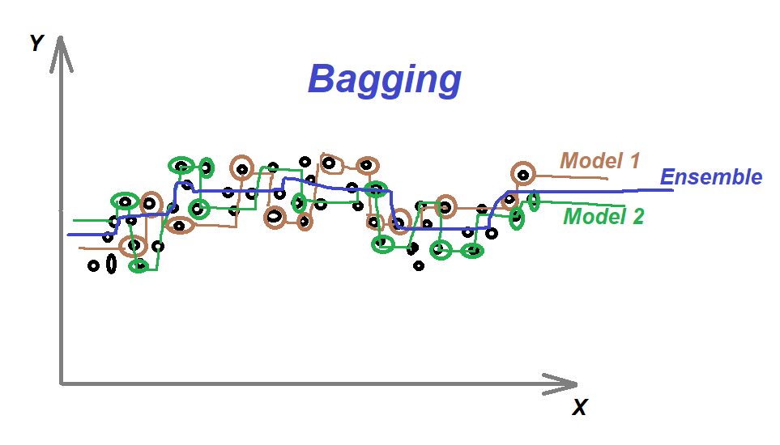
6.10 Random Forest
Un bosque aleatorio es un algoritmo de aprendizaje automático supervisado que se construye a partir de algoritmos de árbol de decisión. Este algoritmo se aplica en diversas industrias, como la banca y el comercio electrónico, para predecir el comportamiento y los resultados.
En esta clase se dará una descripción general del algoritmo de bosque aleatorio, cómo funciona y las características del algoritmo.
También se señalan las ventajas y desventajas de este algoritmo.
6.10.1 ¿Qué es?
Un bosque aleatorio es una técnica de aprendizaje automático que se utiliza para resolver problemas de regresión y clasificación. Utiliza el aprendizaje por conjuntos, que es una técnica que combina muchos clasificadores para proporcionar soluciones a problemas complejos.
Este algoritmo consta de muchos árboles de decisión. El “bosque” generado se entrena mediante agregación de bootstrap (bagging), el cual es es un meta-algoritmo de conjunto que mejora la precisión de los algoritmos de aprendizaje automático.
El algoritmo establece el resultado en función de las predicciones de los árboles de decisión. Predice tomando el promedio o la media de la salida de varios árboles. El aumento del número de árboles aumenta la precisión del resultado.
Un bosque aleatorio erradica las limitaciones de un algoritmo de árbol de decisión. Reduce el sobreajuste de conjuntos de datos y aumenta la precisión. Genera predicciones sin requerir muchas configuraciones en paquetes (como parsnip).

6.10.2 Características de los bosques aleatorios
Es más preciso que el algoritmo árbol de decisiones.
Proporciona una forma eficaz de gestionar los datos faltantes.
Puede producir una predicción razonable sin ajuste de hiperparámetros.
Resuelve el problema del sobreajuste en los árboles de decisión.
En cada árbol forestal aleatorio, se selecciona aleatoriamente un subconjunto de características en el punto de división del nodo.
6.10.3 Aplicar árboles de decisión en un bosque aleatorio
La principal diferencia entre el algoritmo de árbol de decisión y el algoritmo de bosque aleatorio es que el establecimiento de nodos raíz y la desagregación de nodos se realiza de forma aleatoria en este último. El bosque aleatorio emplea el método de bagging para generar la predicción requerida.
El método bagging implica el uso de diferentes muestras de datos (datos de entrenamiento) en lugar de una sola muestra. Los árboles de decisión producen diferentes resultados, dependiendo de los datos de entrenamiento alimentados al algoritmo de bosque aleatorio. Estos resultados se clasificarán y se seleccionará el más alto como resultado final.
Nuestro primer ejemplo todavía se puede utilizar para explicar cómo funcionan los bosques aleatorios. Supongamos que solo tenemos cuatro árboles de decisión. En este caso, los datos de entrenamiento que comprenden las observaciones y funciones del teléfono se dividirán en cuatro nodos raíz.
Los nodos raíz podrían representar cuatro características que podrían influir en la elección del cliente (precio, almacenamiento interno, cámara y RAM). El bosque aleatorio dividirá los nodos seleccionando características al azar. La predicción final se seleccionará en función del resultado de los cuatro árboles.
El resultado elegido por la mayoría de los árboles de decisión será la elección final.
Si tres árboles predicen la compra y un árbol predice que no comprará, entonces la predicción final será la compra. En este caso, se prevé que el cliente comprará el teléfono.
El siguiente diagrama muestra un clasificador de bosque aleatorio simple.

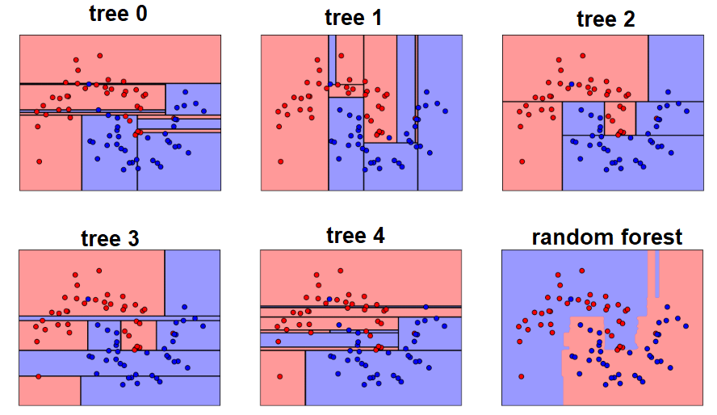
6.10.4 Ventajas y desventjas de bosques aleatorios
Ventajas
Puede realizar tareas de regresión y clasificación.
Un bosque aleatorio produce buenas predicciones que se pueden entender fácilmente.
Puede manejar grandes conjuntos de datos de manera eficiente.
Proporciona un mayor nivel de precisión en la predicción de resultados sobre el algoritmo del árbol de decisión.
Desventajas
Cuando se usa un bosque aleatorio, se requieren bastantes recursos para el cálculo.
Consume más tiempo en comparación con un algoritmo de árbol de decisiones.
No producen buenos resultados cuando los datos son muy escasos. En este caso, el subconjunto de características y la muestra de arranque producirán un espacio invariante. Esto conducirá a divisiones improductivas, que afectarán el resultado.
6.10.5 Bosques aleatorios para modelo de regresión
Para implementar este algoritmo en R utilizaremos la función rand_forest de
la paquetería parsnip, esta función define un modelo que crea una gran cantidad de árboles de decisión, cada uno independiente de los demás. La predicción final utiliza todas las predicciones de los árboles individuales y las combina.
Hay diferentes formas de adaptar el motor a este modelo:
ranger (default)
randomForest
spark
# Se declara el modelo de clasificación
library(ranger)
rforest_model <- rand_forest(mode = "regression",
trees = 1000,
mtry = tune(),
min_n = tune()) %>%
set_engine("ranger", importance = "impurity")
# Se declara el flujo de trabajo
rforest_workflow <- workflow() %>%
add_model(rforest_model) %>%
add_recipe(receta_casas)
# Declaración del grid
rforest_param_grid <- grid_regular(
mtry(range = c(8,15)),
min_n(range = c(2,16)),
levels = c(13, 18)
)
ctrl_grid <- control_grid(save_pred = T, verbose = T)library(doParallel)
# Creación del cluster de trabajo
UseCores <- detectCores() - 1
cluster <- makeCluster(UseCores)
registerDoParallel(cluster)
# V fold cross validation
ames_folds <- vfold_cv(ames_train, v = 10)
# Ajuste de parámetros
rft1 <- Sys.time()
rforest_tune_result <- tune_grid(
rforest_workflow,
resamples = ames_folds,
grid = rforest_param_grid,
metrics = metric_set(rmse, rsq, mae),
control = ctrl_grid
)
rft2 <- Sys.time(); rft2 - rft1
# Se detiene el cluster
stopCluster(cluster)
# Se guardan los resultados en formato RDS
rforest_tune_result %>% saveRDS("src/ml/random_forest_model_reg.rds")rforest_tune_result <- readRDS("models/ml/random_forest_model_reg.rds")
# R cuadrada
rforest_tune_result %>% autoplot(metric = "rsq") +
xlab('Número mínimo de elementos por nodo')+
ylab('R cuadrada')+
ggtitle('Gráfica R cuadrada')+
guides(color = guide_legend(title = 'Número de ramas'))+
theme_minimal()
# Resumen de métricas
rforest_tune_result %>%
collect_metrics() %>%
group_by(.metric) %>%
summarise(mean_max = max(mean),
mean_min = min(mean),
mean_mean = mean(mean),
mean_median = median(mean),
.groups = "drop")## # A tibble: 3 × 5
## .metric mean_max mean_min mean_mean mean_median
## <chr> <dbl> <dbl> <dbl> <dbl>
## 1 mae 0.106 0.0963 0.0999 0.0995
## 2 rmse 0.164 0.151 0.156 0.155
## 3 rsq 0.873 0.860 0.868 0.868# Mejores 10 resultados
show_best(rforest_tune_result, n = 10, metric = "rsq") %>%
as.data.frame()## mtry min_n .metric .estimator mean n std_err .config
## 1 15 2 rsq standard 0.8727066 10 0.01368188 Preprocessor1_Model008
## 2 15 4 rsq standard 0.8723625 10 0.01388810 Preprocessor1_Model024
## 3 15 3 rsq standard 0.8723101 10 0.01404189 Preprocessor1_Model016
## 4 14 2 rsq standard 0.8722146 10 0.01403390 Preprocessor1_Model007
## 5 14 3 rsq standard 0.8721453 10 0.01362578 Preprocessor1_Model015
## 6 15 5 rsq standard 0.8717875 10 0.01414844 Preprocessor1_Model032
## 7 15 6 rsq standard 0.8717166 10 0.01400276 Preprocessor1_Model040
## 8 13 4 rsq standard 0.8715499 10 0.01364915 Preprocessor1_Model022
## 9 15 7 rsq standard 0.8715306 10 0.01393817 Preprocessor1_Model048
## 10 14 4 rsq standard 0.8712432 10 0.01411917 Preprocessor1_Model023# Selección del mejor modelo según la métrica r cuadrada
best_rforest_model <- select_best(rforest_tune_result, metric = "rsq")
# Selección del mejor modelo por un error estándar
best_rforest_model_1se <- select_by_one_std_err(
rforest_tune_result, metric = "rsq", "rsq")
# Selección del mejor modelo
final_rforest_model <- rforest_workflow %>%
#finalize_workflow(best_rforest_model) %>%
finalize_workflow(best_rforest_model_1se) %>%
fit(data = ames_train)# Predicciones
results <- predict(final_rforest_model, ames_test) %>%
dplyr::bind_cols(truth = ames_test$Log_SalePrice) %>%
dplyr::rename(pred_rforest_model = .pred, log_SalePrice = truth)
head(results, 10)## # A tibble: 10 × 2
## pred_rforest_model log_SalePrice
## <dbl> <dbl>
## 1 11.8 11.6
## 2 11.9 12.1
## 3 12.1 12.1
## 4 12.1 12.1
## 5 11.6 11.9
## 6 12.2 12.3
## 7 12.3 12.3
## 8 12.0 11.9
## 9 11.6 11.6
## 10 11.6 11.46.10.6 Bosques aleatorios para modelo de clasificación
# Se declara el modelo de clasificación
rforest_model <- rand_forest(mode = "classification",
trees = 1000,
mtry = tune(),
min_n = tune()) %>%
set_engine("ranger", importance = "impurity")
# Se declara el flujo de trabajo
rforest_workflow <- workflow() %>%
add_model(rforest_model) %>%
add_recipe(telco_rec)
# Declaración del grid
rforest_param_grid <- grid_regular(
mtry(range = c(8,15)),
min_n(range = c(2,16)),
levels = c(13, 18)
)
ctrl_grid <- control_grid(save_pred = T, verbose = T)library(doParallel)
library(ranger)
# Creación del cluster de trabajo
UseCores <- detectCores() - 1
cluster <- makeCluster(UseCores)
registerDoParallel(cluster)
# Ajuste de parámetros
rft1 <- Sys.time()
rforest_tune_result <- tune_grid(
rforest_workflow,
resamples = telco_folds,
grid = rforest_param_grid,
metrics = metric_set(roc_auc, pr_auc, sens),
control = ctrl_grid
)
rft2 <- Sys.time(); rft2 - rft1
# Se detiene el cluster
stopCluster(cluster)
# Se guardan los resultados en formato RDS
rforest_tune_result %>% saveRDS("src/ml/random_forest_model.rds")rforest_tune_result <- readRDS("models/ml/random_forest_model.rds")
# Curva de precisión
rforest_tune_result %>%
unnest(.metrics) %>%
filter(.metric == "pr_auc") %>%
ggplot(aes(x = mtry, y = .estimate)) +
scale_x_log10() +
geom_line(aes(color = id))+
ggtitle('Gráfica de precisión') +
theme_minimal()
rforest_tune_result %>% autoplot(metric = "pr_auc") +
xlab('Número mínimo de elementos por nodo')+
ylab('Precisión')+
ggtitle('Gráfica de precisión por tamaño de nodos')+
guides(color = guide_legend(title = 'Número de ramas'))+
theme_minimal()
# Resumen de métricas
rforest_tune_result %>%
collect_metrics() %>%
group_by(.metric) %>%
summarise(mean_max = max(mean),
mean_min = min(mean),
mean_mean = mean(mean),
mean_median = median(mean),
.groups = "drop")## # A tibble: 3 × 5
## .metric mean_max mean_min mean_mean mean_median
## <chr> <dbl> <dbl> <dbl> <dbl>
## 1 pr_auc 0.933 0.925 0.929 0.929
## 2 roc_auc 0.835 0.819 0.828 0.829
## 3 sens 0.911 0.891 0.901 0.901# Mejores 20 resultados
show_best(rforest_tune_result, n = 20, metric = "pr_auc") ## # A tibble: 20 × 8
## mtry min_n .metric .estimator mean n std_err .config
## <int> <int> <chr> <chr> <dbl> <int> <dbl> <chr>
## 1 8 16 pr_auc binary 0.933 10 0.00346 Preprocessor1_Model113
## 2 9 16 pr_auc binary 0.932 10 0.00345 Preprocessor1_Model114
## 3 8 14 pr_auc binary 0.932 10 0.00341 Preprocessor1_Model097
## 4 8 13 pr_auc binary 0.932 10 0.00340 Preprocessor1_Model089
## 5 9 15 pr_auc binary 0.932 10 0.00345 Preprocessor1_Model106
## 6 8 15 pr_auc binary 0.932 10 0.00351 Preprocessor1_Model105
## 7 8 12 pr_auc binary 0.932 10 0.00341 Preprocessor1_Model081
## 8 10 15 pr_auc binary 0.932 10 0.00341 Preprocessor1_Model107
## 9 10 16 pr_auc binary 0.932 10 0.00346 Preprocessor1_Model115
## 10 9 14 pr_auc binary 0.932 10 0.00341 Preprocessor1_Model098
## 11 8 11 pr_auc binary 0.932 10 0.00354 Preprocessor1_Model073
## 12 10 14 pr_auc binary 0.932 10 0.00341 Preprocessor1_Model099
## 13 9 13 pr_auc binary 0.931 10 0.00343 Preprocessor1_Model090
## 14 9 12 pr_auc binary 0.931 10 0.00343 Preprocessor1_Model082
## 15 10 13 pr_auc binary 0.931 10 0.00334 Preprocessor1_Model091
## 16 8 10 pr_auc binary 0.931 10 0.00348 Preprocessor1_Model065
## 17 11 14 pr_auc binary 0.931 10 0.00353 Preprocessor1_Model100
## 18 8 9 pr_auc binary 0.931 10 0.00334 Preprocessor1_Model057
## 19 11 15 pr_auc binary 0.931 10 0.00346 Preprocessor1_Model108
## 20 11 16 pr_auc binary 0.931 10 0.00343 Preprocessor1_Model116# Selección del mejor modelo según la métrica de precisión
best_rforest_model <- select_best(rforest_tune_result, metric = "pr_auc")
# Selección del mejor modelo por un error estándar
best_rforest_model_1se <- select_by_one_std_err(
rforest_tune_result, metric = "pr_auc", "pr_auc")
# Selección del mejor modelo
final_rforest_model <- rforest_workflow %>%
finalize_workflow(best_rforest_model_1se) %>%
fit(data = telco_train)## Warning: There are new levels in a factor: NA## Warning: 8 columns were requested but there were 4 predictors in the data. 4
## will be used.# Predicciones
results_rforest_clas <- predict(final_rforest_model, telco_test, type = 'prob') %>%
dplyr::bind_cols(truth =telco_test$Churn) %>%
mutate(truth = factor(truth, levels = c('No', 'Yes'), labels = c('No', 'Yes')))## Warning: There are new levels in a factor: NAhead(results_rforest_clas, 10)## # A tibble: 10 × 3
## .pred_No .pred_Yes truth
## <dbl> <dbl> <fct>
## 1 0.960 0.0395 No
## 2 0.228 0.772 Yes
## 3 0.604 0.396 No
## 4 0.997 0.00325 No
## 5 0.975 0.0251 No
## 6 0.409 0.591 No
## 7 0.997 0.00308 No
## 8 0.760 0.240 No
## 9 0.366 0.634 Yes
## 10 1 0 Noresults_cla_rforest <-results_rforest_clas# Curvas pecision recall y ROC
pr_curve_rforest_clas <- pr_curve(results_rforest_clas, truth = truth, estimate = .pred_Yes, event_level = 'second')
roc_curve_rforest_clas <- roc_curve(results_rforest_clas, truth = truth, estimate = .pred_Yes, event_level = 'second')library(patchwork)
pr_curve_plot <- pr_curve_rforest_clas %>%
ggplot(aes(x = recall, y = precision)) +
geom_path(size = 1, colour = 'lightblue') +
coord_equal() +
ggtitle("Precision vs Recall")+
theme_minimal()
roc_curve_plot <- roc_curve_rforest_clas %>%
ggplot(aes(x = 1 - specificity, y = sensitivity)) +
geom_path(size = 1, colour = 'lightblue') +
geom_abline() +
coord_equal() +
ggtitle("ROC Curve")+
theme_minimal()
pr_curve_plot + roc_curve_plot
6.10.7 Importancia de las variables
Después de entrenar un modelo, es natural preguntarse qué variables tienen el mayor poder predictivo. Las variables de gran importancia son impulsoras del resultado y sus valores tienen un impacto significativo en los valores del resultado. Por el contrario, las variables con poca importancia pueden omitirse de un modelo, lo que lo hace más simple y rápido de ajustar y predecir.
library(vip)
final_rforest_model %>%
pull_workflow_fit() %>%
vip::vip() +
ggtitle("Importancia de las variables")+
theme_minimal()## Warning: `pull_workflow_fit()` was deprecated in workflows 0.2.3.
## Please use `extract_fit_parsnip()` instead.
Existen dos medidas de importancia para cada variable en el bosque aleatorio:
La primera medida se basa en cuánto disminuye la precisión cuando se excluye la variable.
Primero, se mide la precisión de la predicción en la muestra fuera de la bolsa. Luego, los valores de la variable en la muestra fuera de la bolsa se mezclan aleatoriamente, manteniendo todas las demás variables iguales. Finalmente, se mide la disminución en la precisión de la predicción en los datos mezclados.
Se reporta la disminución media de la precisión en todos los árboles.
La segunda medida se basa en la disminución de la impureza de Gini cuando se elige una variable para dividir un nodo.
Cuando se construye un árbol, la decisión sobre qué variable dividir en cada nodo utiliza un cálculo de la impureza de Gini.
Para cada variable, la suma de la disminución de Gini en cada árbol del bosque se acumula cada vez que se elige esa variable para dividir un nodo. La suma se divide entre la cantidad de árboles en el bosque para obtener un promedio. La escala es irrelevante: solo importan los valores relativos.
Ve este artículo para más información sobre la impureza de Gini.
6.11 Comparación de modelos
Comparemos las curvas ROC y Precision-Recall de los modelos de clasificación que hemos creado
# Curvas pecision recall y ROC
pr_curve_plot <- results_pr_curve %>%
ggplot(aes(x = recall, y = precision, color = ID)) +
geom_path(size = 1) +
coord_equal() +
ggtitle("Precision vs Recall")+
theme_minimal()
roc_curve_plot <- results_roc_curve %>%
ggplot(aes(x = 1 - specificity, y = sensitivity, color = ID)) +
geom_path(size = 1) +
geom_abline() +
coord_equal() +
ggtitle("ROC Curve")+
theme_minimal()
pr_curve_plot 
roc_curve_plot